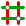
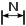
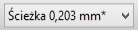
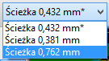
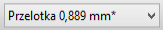
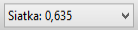
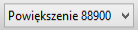

Podręcznik użytkownika
Prawa autorskie
Copyright © 2010-2016. Ten dokument jest chroniony prawem autorskim. Lista autorów znajduje się poniżej. Możesz go rozpowszechniać oraz modyfikować na zasadach określonych w General Public License (http://www.gnu.org/licenses/gpl.html), wersja 3 lub późniejsza, albo określonych w Creative Commons Attribution
Wszystkie znaki towarowe użyte w tym dokumencie należą do ich właścicieli.
Współtwórcy
Jean-Pierre Charras, Fabrizio Tappero.
Tłumaczenie
Kerusey Karyu <keruseykaryu@o2.pl>, 2014-2016.
Kontakt
Wszelkie zauważone błędy, sugestie lub nowe wersje dotyczące tego dokumentu prosimy kierować do:
-
W sprawie dokumentacji: https://github.com/KiCad/kicad-doc/issues
-
W sprawie oprogramowania: https://bugs.launchpad.net/kicad
-
W sprawie tłumaczeń interfejsu użytkownika (i18n): https://github.com/KiCad/kicad-i18n/issues
Data publikacji i wersja oprogramowania
17 marca 2014.
1. Wprowadzenie
1.1. Kluczowe właściwości
Pcbnew jest potężną aplikacją do trasowania obwodów drukowanych, dostępną zarówno dla systemów Linux, Windows oraz OS X. Pcbnew jest zwykle używany razem z programem do edycji schematów ideowych Eeschema by na ich podstawie tworzyć obwody drukowane.
Pcbnew zarządza też bibliotekami footprintów. Każdy fooprint jest rysunkiem fizycznych komponentów zawierający jego "odcisk" - czyli układ wyprowadzeń zapewniający połączenia ze składnikiem. Wymagane footprinty są ładowane automatycznie podczas wczytywania listy sieci. Dowolna zmiana footprintów lub renumeracja może być zmieniona na schemacie i przekazana do Pcbnew poprzez ponowne wygenerowanie listy sieci i wczytanie jej ponownie.
Pcbnew posiada narzędzie do sprawdzania reguł projektowych (DRC), które zapobiega niestosowaniu minimalnych odległości pomiędzy ścieżkami lub polami lutowniczymi, jak i błędnemu prowadzeniu ścieżek, mogących tworzyć połączenia nie będące na liście sieci/schemacie. Podczas korzystania z interaktywnego routera DRC ciągle monitoruje zasady projektowania i pomaga automatycznie sprawdzać trasy poszczególnych ścieżek.
Pcbnew zapewnia możliwość wyświetlania linii prowadzących (ratsnest), łączących poszczególne footprinty zgodnie z połączeniami na schemacie. Połączenia te są śledzone dynamicznie, nawet podczas przesuwania ścieżek i footprintów.
Pcbnew umożliwia w pełni manualne oraz półautomatyczne trasowanie ścieżek, dzięki wbudowanemu routerowi z możliwością omijania lub rozpychania istniejących ścieżek, tzw. router Push and Shove. Eksport oraz import w formacie SPECCTRA DSN pozwala korzystać również z zaawansowanych zewnętrznych auto-routerów.
Pcbnew udostępnia opcje specjalnie do produkcji układów przeznaczonych dla bardzo wysokich częstotliwości (takich jak pola lutownicze trapezoidalne i o złożonej postaci, automatyczne tworzenie płaskich cewek na obwodzie drukowanym…).
1.2. Główne cechy projektu
Najmniejszą jednostką projektową w programie Pcbnew jest 1 nanometr. Wszystkie wymiary są zapisywane jako całkowite nanometry.
Pcbnew może operować na 32 warstwach miedzi oraz 14 warstwach technicznych (m.in. warstwy opisowe, soldermaski, warstwy kleju, pasty lutowniczej i krawędziowej) plus 4 pomocnicze warstwy (rysunkowa i komentarzy) oraz zarządza w czasie rzeczywistym połączeniami pomocniczymi (ratsnest) dla nieistniejących jeszcze ścieżek.
Wyświetlanie elementów PCB (ścieżki, pola lutownicze, tekst, rysunki.) może zostać spersonalizowane:
-
Przez wyświetlanie w trybie pełnym lub trybie uproszczonym.
-
Wyświetlanie lub nie prześwitów na ścieżkach.
Przy skomplikowanych obwodach, wyświetlanie warstw, pól miedzi, elementów może zostać wyłączone w sposób selektywny dla polepszenia czytelności zawartości ekranu. Połączenia lub ścieżki mogą też być podświetlone by wyróżniały się na obwodzie drukowanym.
Footprinty mogą być obracane o dowolny kąt, z krokiem 0,1 stopnia.
Pcbnew zawiera Edytor Footprintów, który pozwala na edycję poszczególnych footprintów, które istnieją na obwodzie drukowanym lub w bibliotekach.
Edytor Footprintów pozwala na użycie kilku narzędzi, które mogą oszczędzić czas poświęcony na tworzenie footprintów:
-
Szybka renumeracja pól lutowniczych przez proste przeciągnięcie myszą po tych polach w kierunku zgodnym z kierunkiem numeracji.
-
Łatwe generowanie szyków prostych i okrągłych dla pól lutowniczych LGA/BGA lub dla obudów z wyprowadzeniami opisanymi na kole.
-
Pół-automatyczne wyrównywanie rzędów lub kolumn pól lutowniczych.
Pola lutownicze mają różne właściwości, które można regulować. Pola mogą być okrągłe, prostokątne, owalne lub trapezowate. Dla elementów THT otwór przelotowy może być przesunięty wewnątrz pola i może być okrągły lub owalny (slot). Poszczególne pola można także obracać i mogą posiadać unikalną soldermaskę, sieć, lub prześwit pasty. Pola mogą również mieć połączenia termiczne dla ich łatwiejszego lutowania. Dowolna kombinacja unikalnych pól może być umieszczona w danej obudowie.
Pcbnew w bardzo prosty sposób może wygenerować wszystkie potrzebne dokumenty produkcyjne:
-
Pliki produkcyjne:
-
Pliki dla fotoploterów w formacie GERBER RS274X.
-
Pliki wierceń w formacie EXCELLON.
-
-
Pliki dla ploterów w formatach HPGL, SVG oraz DXF.
-
Mapy rysunków i wierceń w formacie POSTSCRIPT.
-
Pliki dla wydruków lokalnych.
1.3. Ważne informacje
Z powodu różnorodności kontroli nad programem, wymagane jest posiadanie myszy trójprzyciskowej do pracy w Pcbnew. Wiele funkcji, jak np. panoramowanie widoku będzie wymagało trzeciego klawisza.
W nowym wydaniu programu KiCad, w Pcbnew zostały wprowadzone gruntowne zmiany zaproponowane przez deweloperów z CERN. Obejmuje to takie funkcje jak: nowy renderer (tryby wyświetlania OpenGL i Cairo), Interaktywny router z rozpychaniem ścieżek, pozwalający na trasowanie par różnicowych i dostrajania ich długości przez wprowadzanie meandrów, przebudowany Edytor Footprintów i wiele innych funkcji. Należy pamiętać, że większość z tych nowych funkcji może pracować tylko w nowych trybach wyświetlania OpenGL i Cairo.
2. Instalacja
2.1. Instalacja i konfiguracja
Procedura instalacji została opisana w dokumentacji programu KiCad Manager.
2.2. Modyfikacja domyślnej konfiguracji
Domyślny plik konfiguracji: kicad.pro jest dostarczany w katalogu kicad/share/template. Jest on używany jako początkowa konfiguracja dla wszystkich nowych projektów.
Plik konfiguracji można zmodyfikować według potrzeb, szczególnie jeśli chodzi o zmianę listy dostępnych bibliotek.
Aby wykonać modyfikację tego pliku:
-
Należy uruchomić Pcbnew używając Menadżera projektu lub bezpośrednio z linii poleceń. W systemie Windows na przykład wydając polecenie c:\kicad\bin\pcbnew.exe. W systemie Linux: uruchamiając /usr/local/kicad/bin/kicad lub /usr/local/kicad/bin/pcbnew jeśli pliki binarne znajdują się w /usr/local/kicad/bin.
-
Wybrać Ustawienia → Biblioteka.
-
Dokonać edycji.
-
Zapisać zmodyfikowaną konfigurację (Zapisz ustawienia) z powrotem do kicad/share/template/kicad.pro.
2.3. Zarządzanie bibliotekami footprintów - Pliki starszego typu
Listę bibliotek można dostosować do potrzeb projektu za pomocą okna dialogowego wywoływanego z menu Ustawienia:
Poniższy rysunek ukazuje okno dialogowe pozwalające na ustawienie listy aktywnych bibliotek:
W oknie tym należy dodać wszystkie biblioteki, które zawierają footprinty potrzebne dla aktywnego projektu. Należy również usunąć nieużywane biblioteki z nowych projektów by zapobiec konfilktom nazw. Należy pamiętać, że istnieje problem z listą bibliotek footprintów, gdy istnieją zduplikowane nazwy footprintów w wielu bibliotekach naraz. Gdy wystąpi taka sytuacja, footprint taki będzie odczytywany z pierwszej biblioteki znajdującej się na liście. Jest to pewna niedogodność (Nie można załadować właściwego footprintu), którą można rozwiązać zmienając kolejność na liście biblioteki za pomocą przycisków "Góra", "Dół" obok listy bibliotek lub nadać footrintowi unikalną nazwę używając edytora footprintów.
2.4. Tabele footprintów - Zarządzanie bibliotekami .pretty
Począwszy od wersji 4.0, Pcbnew nie będzie używał narzędzia do konfiguracji bibliotek opierającego się wyłącznie na ścieżkach dostępu. Nowa implementacja tego narzędzia opiera się na tabeli bibliotek footprintów. Informacje z poprzedniej sekcji w tej wersji już nie są obowiązujące. Okno zarządzania bibliotekami jest dostępne przez:
Poniższy rysunek pokazuje okno dialogowe z wspomnianą tabelą. Aby go wywołać należy użyć polecenia "Zarządzanie bibliotekami footprintów" z menu Ustawienia.
Tabela bibliotek footprintów jest używana do mapowania plików bibliotek obsługiwanych przez program do ich nazw skrótowych. Nazwa skrótowa jest używana do wyszukiwania footprintów zamiast poprzedniej metody z wyszukiwaniem plików zgodnie z ustalonym układem ścieżek dostępu. Pozwala to programowi Pcbnew na dostęp do footprintów za pomocą tej samej nazwy w różnych bibliotekach gwarantując tym samym, że właściwy footprint zostanie załadowany z odpowiedniej biblioteki. Pozwala to również na obsługę bibliotek pochodzących z innych programów (z pomocą wtyczek) EDA, takich jak np. Eagle czy gEDA.
2.4.1. Globalna tabela bibliotek footprintów
Globalna tabela bibliotek footprintów zawiera listę bibliotek, które są dostępne zawsze, niezależnie od obecnie wczytanego projektu. Tabela ta jest zapisana w pliku fp-lib-table w katalogu domowym użytkownika. Jego rzeczywista lokacja zależy użytego systemu operacyjnego.
2.4.2. Lokalna tabela bibliotek footprintów zależna od projektu
Lokalna tabela bibliotek footprintów zależna od projektu zawiera listę bibliotek, które są dostępne wyłącznie w obecnie wczytanym projekcie. Lokalna tabela może być modyfikowana tylko wtedy, gdy zostanie ona załadowana razem z listą sieci tego projektu. Gdy projekt nie został załadowany lub gdy taka lokalna tabela nie istnieje, tworzona jest pusta tabela, którą będzie można wypełnić i później zapisać razem z plikiem przypisań footprintów (z rozszerzeniem .cmp).
2.4.3. Konfiguracja początkowa
Gdy Pcbnew lub CvPcb zostanie uruchomiony i globalna tabela bibliotek fp-lib-table nie zostanie znaleziona w katalogu domowym użytkownika, Pcbnew będzie próbował skopiować domyślną tabelę bibliotek fp_global_table zapisaną w folderze template do pliku fp-lib-table w katalogu domowym użytkownika. Jeśli plik fp_global_table nie został znaleziony, to zamiast operacji kopiowania zostanie utworzona pusta tabela. Gdyby taka sytuacja miała miejsce użytkownik ma też możliwość skopiowania fp_global_table samodzielnie lub "ręczne" skonfigurowania tabeli. Domyślna tabela bibliotek zawiera wszystkie standardowe biblioteki jakie zostały zainstalowane razem z programem KiCad EDA Suite.
2.4.4. Dodawanie nowych wpisów w tabeli
By móc używać biblioteki najpierw należy dodać globalną lub lokalną tabelę. Lokalna tabela ma zastosowanie tylko gdy istnieje otwarta lista sieci projektu. Każda pozycja tabeli musi posiadać unikalną nazwę skrótową. Nie musi ona mieć jakiegokolwiek związku z bieżącą nazwą pliku lub ścieżki do niego. Znak dwukropka : nie może być używany w nazwach skrótowych. Każda pozycja musi również odnosić się do prawidłowej ścieżki/nazwy pliku w zależności od typu biblioteki. Ścieżki do plików mogą być bezpośrednie, względne lub pochodzić ze specjalnych zmiennych systemowych - opisanych dalej. Aby biblioteka została wczytana przez Pcbnew musi być także wybrana właściwa wtyczka obsługująca dany format pliku. Pcbnew obecnie wspiera następujące formaty plików bibliotek: KiCad Legacy, KiCad Pretty, Eagle oraz gEDA. Istnieje również pole przeznaczone do wpisania opisu dla danego wpisu w tabeli. Pole z opcjami nie jest w tej chwili używane, zatem umieszczanie jakichkolwiek opcji nie ma znaczenia przy ładowaniu bibliotek. Proszę zauważyć, że nie można umieścić dwóch takich samych nazw skrótowych w jednej tabeli. Jednakże, można wpisać tą samą nazwę skrótową w globalnej i lokalnej tabeli bibliotek, ponieważ tabela lokalna ma większy priorytet niż tabela globalna w takim przypadku. Gdy wpisy zostaną zdefiniowane w lokalnej tabeli bibliotek, to plik fp-lib-table zawierający te wpisy zostanie umieszczony w folderze skąd pochodzi lista sieci.
2.4.5. Pobieranie wartości ze zmiennych systemowych
Jednym z największych zalet tabeli bibliotek footprintów jest możliwość używania odnośników do zmiennych systemowych. Pozwala to na zdefiniowanie własnych ścieżek do bibliotek w zmiennych systemowych i używanie ich w projektach. Odnośniki do zmiennych systemowych można wplatać w treść pól zawierających ścieżkę do pliku używając powszechnie znanego formatu ${nazwa_zmiennej}. Domyślnie Pcbnew definiuje zmienną środowiskową KISYSMOD. Wskazuje ona na miejsce, gdzie zainstalowane zostały biblioteki instalowane razem z programem KiCad EDA Suite. Można ją re-definiować samodzielnie, co pozwala na zastąpienie standardowych bibliotek ich własnymi odpowiednikami. Gdy wczytana zostanie lista sieci, Pcbnew automatycznie definiuje również zmienną KIPRJMOD. Pozwala to na tworzenie bibliotek w miejscu wskazywanym przez projekt bez konieczności definiowania bezwzględnej ścieżki do biblioteki w lokalnej tabeli footprintów projektu.
2.4.6. Używanie wtyczki GitHub
GitHub to specjalna wtyczka pozwalająca na łączenie się ze zdalnym repozytorium GitHub zawierającym footprinty w formacie .pretty (nowa wersja formatu zapisu footprintów przez program KiCad). Repozytorium to jest tylko do odczytu, ale wtyczka umożliwia również dostęp do technologi Copy On Write (COW) wspierającej możliwość edycji footpritnów odczytanych z repozytorium GitHub i zapisanie ich nowych wersji na dysku lokalnym, które później można wysłać z w celu ich aktualizacji. Sama wtyczka nie umożliwia zapisu do repozytorium pod adresem https://github.com. By dodać wpis GitHub do tabeli bibliotek, pole Ścieżka musi zostać wypełniona ważnym adresem URL do repozytorium GitHub.
Przykładowo:
https://github.com/liftoff-sr/pretty_footprints
Zwykle poprawna ścieżka URL jest tworzona wg następującego schematu:
https://github.com/user_name/repo_name
Pole Typ Wtyczki musi być ustawione jako Github. Aby włączyć funkcję "Copy On Write" należy w polu Opcje dodać parametr allow_pretty_writing_to_this_dir który zawierał będzie ścieżkę na dysku lokalnym gdzie zapisywane będą pliki z modyfikacjami. Jeśli ta opcja zostanie pominięta to biblioteka GitHub jest tylko do odczytu. Footprinty tam zapisane są połączeniem części tylko do odczytu repozytorium GitHub i treści lokalnych zmian by utworzyć zmodyfikowaną bibliotekę footprintów. Każda modyfikacja biblioteki GitHub będzie trafiać do tej lokalnej biblioteki hybrydowej COW umieszczonej w odpowiednim folderze *.pretty. Należy w tym miejscu nadmienić, iż część rezydentna COW pochodząca z repozytorium GitHub jest zawsze tylko do odczytu, co oznacza, że nie można niczego samodzielnie usunąć lub zmodyfikować bezpośrednio w samym repozytorium GitHub. Niezależnie czy biblioteka będzie hybrydowa, czyli połączona z lokalnej części tylko do odczytu i zapisu, czy tylko część zdalną przeznaczoną tylko do odczytu, będzie ona dalej zwana biblioteką "Github" w dalszych rozważaniach.
Poniższa tabela pokazuje wpis z tabeli bibliotek, której nie została przypisana opcja allow_pretty_writing_to_this_dir:
| Nazwa skrótowa | Ścieżka | Typ wtyczki | Opcje | Opis |
|---|---|---|---|---|
github |
Github |
Liftoff’s GH footprints |
Następna tabela pokazuje wpis z tabeli bibliotek z opcją dotyczącą COW. Zmienna ${HOME} jest tylko przykładowa. Folder github.pretty jest umieszczony w folderze do którego prowadzi ścieżka ${HOME}/pretty/. W każdym przypadku użycia opcji allow_pretty_writing_to_this_dir, wymagane jest samodzielne utworzenie tego folderu i musi on posiadać rozszerzenie .pretty.
| Nazwa skrótowa | Ścieżka | Typ wtyczki | Opcje | Opis |
|---|---|---|---|---|
github |
Github |
Liftoff’s GH footprints |
Footprinty pobierane z folderu na który wskazuje opcja allow_pretty_writing_to_this_dir mają zawsze pierwszeństwo przed tymi umieszczonymi w zdalnych repozytoriach. Po zapisaniu footprintu do lokalnego folderu przechowującego hybrydowe pliki COW, np. poprzez zapisanie zmian w edytorze footprintów, żadne aktualizacje GitHub nie będą widoczne podczas ładowania footprintów o tej samej nazwie, niż te, które zostały zapisane lokalnie.
Zawsze należy korzystać z odrębnego folderu *.pretty dla poszczególnych bibliotek GitHub i nigdy nie powinno się łączyć folderów przez przypisywanie tego samego folderu do innych bibliotek GitHub, gdyż mogłoby to doprowadzić do bałaganu nad którym nie byłoby można zapanować. Wartości symboliczne w zmiennych systemowych zapisane w notacji ${nazwa_zmiennej} przypisane do opcji allow_pretty_writing_to_this_dir będą rozwijane automatycznie by utworzyć właściwą ścieżkę, tak samo jak to ma miejsce w polu Ścieżka.
Co robić z plikami w COW? System COW to element przyśpieszający współużytkowanie footprintów. Jeśli zawartość COW będzie regularnie przesyłana do zarządcy repozytorium GitHub, będzie można pomóc w uaktualnianiu kopii znajdujących się w repozytorium zdalnym. Całość jest bardzo prosta. Za pomocą poczty elektronicznej należy wysłać pliki *.kicad_mod znajdujące się w folderach systemu COW do osoby zarządzającej repozytorium. Po otrzymaniu potwierdzenia, że zmiany zostały zaakceptowane i wprowadzone, można skasować wysłane pliki z COW. Nowe wersje plików zostaną pobrane z repozytorium GitHub. Głównym celem jest utrzymywanie jak najmniejszego zestawu plików systemu COW jak tylko jest to możliwe poprzez regularne przesyłanie zawartych w niej plików do https://github.com.
Na koniec. Można użyć Nginx jako pamięci podręcznej dla serwerów Github, który przyśpieszy ładowanie footprintów. Można go zainstalować lokalnie lub na serwerze sieciowym. W plikach źródłowych programu jest przykład takiej konfiguracji: pcbnew/github/nginx.conf. Najprostszą drogą do uruchomienia tego pośrednika jest nadpisanie domyślnego pliku nginx.conf tym plikiem i wykonanie polecenia export KIGITHUB=http://my_server:54321/KiCad gdzie my_server to adres IP lub domena komputera z uruchomionym Nginx.
2.4.7. Generalne zalecenia przy używaniu tabeli bibliotek
Biblioteki footprintów mogą być zdefiniowane globalne lub lokalnie dla obecnie wczytanego projektu. Biblioteki umieszczone w globalnej tabeli bibliotek użytkownika są zawsze dostępne i są zapisane w pliku fp-lib-table w katalogu domowym użytkownika. Globalne biblioteki będą dostępne nawet jeśli nie została otwarta lista sieci danego projektu. Inaczej sprawa się ma w przypadku lokalnych bibliotek, które są aktywne wyłącznie dla bieżącej listy sieci. Lokalna tabela bibliotek jest zapisywana w pliku fp-lib-table umieszczonym w tej samej ścieżce co lista sieci.
Nie ma przeszkód co do definiowania odnośników do bibliotek w obu tabelach. Dlatego też nie zostało odgórnie określone w jaki sposób użytkownik będzie wykorzystywał możliwości jakie dają globalne i lokalne tabele. Są jednak zalety i wady każdego z rozwiązań, które należy rozważyć.
-
Można zdefiniować wszystkie biblioteki w globalnej tabeli bibliotek, co oznacza, że będą one zawsze dostępne gdy będą potrzebne.
-
Wadą takiego rozwiązania będzie utrudnione poszukiwanie wśród wielu bibliotek odpowiedniego footprintu dla danego komponentu.
-
-
Można zdefiniować biblioteki w obu tabelach jednocześnie.
-
Zaletą takiego rozwiązania będzie możliwość zdefiniowania tylko tych bibliotek, które będą w danej chwili potrzebne oraz skrócenie czasu ich przeszukiwania.
-
Wadą tego rozwiązania będzie zaś to, że będzie trzeba zawsze pamiętać, by dodać odpowiednie biblioteki dla każdego nowego projektu.
-
-
Można zdefiniować biblioteki w obu tabelach jednocześnie.
Sensowne staje się wtedy wpisanie bibliotek, które są wykorzystywane prawie we wszystkich projektach do tabeli globalnej, a w lokalnych tabelach umieszczać tylko te, które są przydatne tylko w tym konkretnym projekcie. Będzie to rozwiązanie kompromisowe, które będzie posiadało największą elastyczność kosztem zmniejszenia szybkości wyszukiwania.
3. Obsługa programu
3.1. Dostęp do poleceń
Pcbnew udostępnia wiele różnych poleceń, które mogą być uruchamiane za pomocą:
-
Paska menu na samej górze ekranu.
-
Górnego paska ikon.
-
Bocznego paska ikon znajdującego się z prawej strony.
-
Bocznego paska narzędzi znajdującego się z lewej strony.
-
Klawiszy myszy (opcje menu). Zwłaszcza:
-
Prawy klawisz otwiera menu podręczne gdzie dostępne są polecenia kontekstowe związane z elementem znajdującym się w miejscu kursora.
-
-
Klawiatury (Klawisze funkcyjne F1, F2, F3, F4, Shift, Delete, +, -, Page Up, Page Down oraz Spacja). Klawisz Esc zaś służy do przerywania właśnie wykonywanej operacji.
Poniższy obrazek ilustruje niektóre z możliwości dostępu do poleceń:
3.2. Polecenia związane z myszą
3.2.1. Podstawowe polecenia
-
Prawy przycisk
-
Pojedynczy klik: wyświetla na pasku informacyjnym charakterystyczne właściwości footprintu lub tekstu znajdującego się w miejscu kursora.
-
Podwójne kliknięcie: otwiera okno edycji dla elementu znajdującego się w miejscu kursora (o ile taki element daje taką możliwość).
-
-
Przycisk centralny/rolka
-
Szybka zmiana powiększenia i parę komend w menedżerze warstw.
-
Przytrzymanie klawisza centralnego i przeciągnięcie myszy rysuje zaznaczenie obszaru który po zwolnieniu klawisza będzie powiększony na cały dostępny ekran roboczy. Kółkiem myszy można też przybliżać lub oddalać obszar znajdujący się wokół kursora.
-
-
Prawy przycisk
-
Otwiera podręczne menu
-
3.2.2. Operacje na blokach
Operacje takie jak: przesuwanie, przerzucanie (na inną warstwę), kopiowanie, obracanie oraz kasowanie zawartości bloku są dostępne z menu podręcznego. Dodatkowo można też dokonać przybliżenia obszaru zaznaczonego jako blok.
Ramka zaznaczenia bloku jest rysowana poprzez przesunięcie kursora myszą razem z wciśniętym jej lewym klawiszem. Operacja związana z wyborem bloku jest przeprowadzana po zwolnieniu klawisza.
Naciskając i przytrzymując jeden z klawiszy Shift, Ctrl, lub oba razem, podczas rysowania zaznaczenia automatycznie wybiera jedną z opcji: przesuwanie, przerzucanie, obrót lub kasowanie zawartości bloku:
| Akcja | Efekt |
|---|---|
Przesuwanie myszy z wciśniętym lewym klawiszem |
Zaznaczanie obszaru w celu jego przesunięcia w inne miejsce |
Shift + Przesuwanie myszy z wciśniętym lewym klawiszem |
Zaznaczanie obszaru w celu jego przerzucenia na przeciwną warstwę |
Ctrl + Przesuwanie myszy z wciśniętym prawym klawiszem myszy |
Zaznaczanie obszaru w celu jego obrotu o 90° |
Shift + Ctrl + Przesuwanie myszy z wciśniętym lewym klawiszem myszy |
Zaznaczanie obszaru w celu jego skasowania |
Wciśnięty centralny klawisz myszy |
Zaznaczanie obszaru w celu jego powiększenia |
Podczas przesuwania bloku:
-
Można przesunąć blok na nową pozycję oraz z pomocą lewego klawisza myszy umieścić go w wybranej pozycji.
-
By anulować operację można użyć prawego klawisza myszy i wybrać "Anuluj blok" z podręcznego menu (lub też skorzystać z klawisza ESC).
Alternatywnie jeśli żaden z klawiszy nie jest naciśnięty podczas rysowania bloku, można użyć prawego klawisza myszy by wyświetlić podręczne menu i wybrać żądaną akcję z listy dostępnych.
Dla każdej operacji blokowej okno wyboru pozwala na działania, które będą ograniczać się tylko do niektórych elementów. Każde z powyższych poleceń może zostać anulowane przez to samo menu podręczne lub przez naciśnięcie klawisza Esc.
3.3. Wybór siatki
W czasie tworzenia obwodu drukowanego kursor przesuwa się po siatce. Siatkę tą można włączyć lub wyłączyć z lewego panelu.
Dowolną predefiniowaną, bądź zdefiniowaną przez użytkownika siatkę można wybrać z listy rozwijanej pod głównym paskiem narzędzi lub z menu podręcznego. Siatkę użytkownika można zdefiniować z poziomu menu w Wymiary → Siatka użytkownika.
3.4. Ustawianie powiększenia - Zoom
Poziom powiększenia może zostać zmieniony w następujący sposób:
-
Otwórz menu podręczne (używając prawego klawisza myszy) i wybierz jedną z dostępnych pozycji.
-
Użyj następujących klawiszy funkcyjnych:
-
F1: Zwiększenie (powiększenie)
-
F2: Zredukowanie (pomniejszenie)
-
F3: Odrysowanie widoku
-
F4: Centrowanie widoku na bieżącej pozycji kursora
-
-
Przesunięcie kółka myszy.
-
Przytrzymaj środkowy klawisz myszy, zaznaczając obszar, który ma zostać powiększony.
3.5. Wyświetlanie pozycji kursora
Pozycja kursora jest wyświetlana albo w calach (inch lub ``) lub w milimetrach (mm) zgodnie z wyborem wyświetlanych jednostek na lewym pasku opcji.
Niezależnie od wybranych jednostek Pcbnew zawsze pracuje z dokładnością 1 nanometra.
Pasek statusu wyświetlany na dole okna aplikacji zawiera następujące informacje:
-
Bieżące powiększenie.
-
Pozycję absolutną kursora.
-
Pozycję względną kursora. Pozycję bazową (0,0) do której odnosi się pozycja względna można przenosić na dowolną pozycję absolutną za pomocą klawisza spacji. Dodatkowo wyświetlana jest bieżąca odległość do punktu bazowego.
Dodatkowo pozycję względną kursora można wyświetlać jako współrzędne polarne (promień + kąt). Zmiany sposobu wyświetlania pozycji względnej przełączyć za pomocą odpowiedniej opcji na lewym pasku opcji.

3.6. Szybki dostęp do poleceń - Skróty klawiszowe
Wiele poleceń jest dostępnych bezpośrednio z klawiatury. Wybór może być wykonany zarówno w trybie małych jak i wielkich liter. Wiele skrótów jest pokazywany w menu. Niektóre skróty które nie występują jawnie to:
-
Delete: usuwa footprint lub ścieżkę. (Operacja dostępna tylko w trybie przesuwania footprintów lub trasowania ścieżek)
-
V: Jeśli jest aktywne narzędzie do prowadzenia ścieżek zmienia warstwę i wstawia przelotkę, jeśli aktualnie prowadzimy ścieżkę.
-
+ i -: Przełącza się na następną/poprzednią warstwę.
-
?: Pokazuje listę dostępnych skrótów klawiszowych.
-
Spacja: Resetuje punkt odniesienia dla współrzędnych względnych.
3.7. Operacje na blokach
Operacje takie jak: przesuwanie, przerzucanie (na inną warstwę), kopiowanie, obracanie oraz kasowanie zawartości bloku są dostępne z menu podręcznego. Dodatkowo można też dokonać przybliżenia obszaru zaznaczonego jako blok.
Ramka zaznaczenia bloku jest rysowana poprzez przesunięcie kursora myszą razem z wciśniętym jej lewym klawiszem. Operacja związana z wyborem bloku jest przeprowadzana po zwolnieniu klawisza.
Naciskając i przytrzymując jeden z klawiszy Shift, Ctrl, lub oba razem, lub Alt, podczas rysowania zaznaczenia automatycznie wybiera jedną z opcji: przesuwanie, przerzucanie, obrót lub kasowanie zawartości bloku:
| Akcja | Efekt |
|---|---|
Przesuwanie myszy z wciśniętym lewym klawiszem |
Przesunięcie obszaru w inne miejsce |
Shift + Wciśnięty lewy klawisz myszy |
Przerzucenie bloku na przeciwną warstwę |
Ctrl + Wciśnięty prawy klawisz myszy |
Obrót bloku o 90° |
Shift + Ctrl + Wciśnięty lewy klawisz myszy |
Skasowanie zawartości obszaru |
Alt + Wciśnięty lewy klawisz myszy |
Skopiowanie obszaru |
Dla każdej operacji blokowej okno wyboru pozwala na działania, które będą ograniczać się tylko do niektórych elementów.
Każde z powyższych poleceń może zostać anulowane przez to samo menu podręczne lub przez naciśnięcie klawisza Esc.
3.8. Jednostki miar używane w oknach dialogowych
Przy wyświetlaniu rozmiarów są używane dwie jednostki miar: cal oraz mm
zgodnie z wybraną opcją

 , którą można znaleźć na lewym panelu
opcji. Jednakże można również wprowadzać dane także w innych dostępnych
jednostkach gdy wprowadzana jest nową wartość.
, którą można znaleźć na lewym panelu
opcji. Jednakże można również wprowadzać dane także w innych dostępnych
jednostkach gdy wprowadzana jest nową wartość.
Akceptowane jednostki:
1*in* |
(1 cal) |
1 `` |
(1 cal/idem) |
25 th |
(25 thou) |
25 mi |
(25 milsów, to samo co thou) |
6 mm |
(6 mm, jak sama nazwa wskazuje) |
Należy przy tym stosować się do pewnych zasad:
-
Spacje pomiędzy liczbą a jednostką są dopuszczalne.
-
Tylko dwie pierwsze litery są znaczące.
-
W krajach, gdzie używany jest inny znak niż kropka (.) jako separator wartości dziesiętnych, można używać również kropki, zastępując nią właściwy dla danej lokalizacji znak separatora dziesiętnego. Zatem 1,5 oraz 1.5 są tak samo traktowane.
3.9. Główne menu aplikacji
Pasek menu pozwala na dostęp do poleceń związanych z plikami (jak odczyt i zapis), opcjami konfiguracyjnymi, drukowaniem oraz rysowaniem z pomocą ploterów, jak również dostęp do plików pomocy.

3.9.1. Menu Plik

Pozwala na ładowanie i zapisywanie plików z obwodem drukowanym, jak również pozwala na drukowanie bądź rysowanie gotowych obwodów drukowanych. Umożliwia ono też eksport danych o obwodzie drukowanym (w formacie GenCAD 1.4) w celu użycia ich w automatycznych testerach.
3.9.2. Menu Edycja
Pozwala na wykonanie pewnych edycji dotyczących całego projektu obwodu drukowanego:
3.9.3. Menu Widok
Funkcje służące do powiększania i pomniejszania widoku oraz podglądu 3D
Przeglądarka 3D
Otwiera przeglądarkę 3D. Poniżej znajduje się przykład obwodu drukowanego w przestrzeni 3D:
Przełączanie trybu wyświetlania
Pozwala na przełączenie trybu wyswietlania grafiki.
-
Domyślny
-
OpenGL
-
Cairo
3.9.4. Menu Dodaj
Zawiera te same funkcje co prawy pasek narzędzi.
3.9.5. Menu trasowania
Funkcje trasowania.
3.9.6. Menu Ustawienia
Pozwala na:
-
Wybór aktywnych bibliotek footprintów.
-
Pokazuje/ukrywa "Menedżera Warstw" (Po prawej stronie, pozwalającym na wybór kolorów warstw i pozostałych grup elementów. Umożliwia także na przełączanie widoczności warstw i grup elementów).
-
Zarządzanie głównymi opcjami programu (jednostki, itp.)
-
Zarządzanie pozostałymi opcjami wyświetlania
-
Tworzeniem, edycją (i ponownym odczytaniem) pliku z definicją skrótów klawiszowych.
3.9.7. Menu Wymiary
Bardzo istotne menu. Pozwala na dostosowanie:
-
Rozmiaru siatki użytkownika.
-
Rozmiaru tekstów oraz szerokości linii podczas rysowania.
-
Rozmiarów oraz charakterystyki pól lutowniczych.
-
Ustawień globalnych związanych z warstwami masek: soldermaski oraz pasty.
3.9.8. Menu Narzędzia
3.9.9. Menu Reguły projektowe
Pozwala na dostęp do dwóch okien dialogowych:
-
Ustawienia reguł projektowych (szerokości ścieżek, rozmiar przelotek, prześwit).
-
Ustawienia warstw (liczba, dostępność oraz nazwy)
3.9.10. Menu Pomoc
Umożliwia wyświetlenie tego pliku pomocy oraz dostarcza informacji o wersji oprogramowania (O programie).
3.10. Polecenia związane z ikonami na głównym pasku narzędzi
Ten pasek narzędziowy daje bezpośredni dostęp do najważniejszych funkcji programu Pcbnew.
|
Tworzy nowy projekt obwodu drukowanego. |
|
Otwiera uprzednio zapisany projekt obwodu drukowanego. |
|
Zapisuje projekt obwodu drukowanego. |
|
Wybiera rozmiar strony (pola roboczego) oraz pozwala na modyfikację właściwości pliku. |
|
Otwiera edytor footprintów pozwalający na podgląd lub edycję bibliotek footprintów. |
|
Cofa lub przywraca ostatnie edycje (do 10 poziomów). |
|
Wyświetla menu z opcjami wydruku. |
|
Wyświetla menu z opcjami rysowania schematu. |
|
Przybliżanie i oddalanie pola roboczego (względem centralnego punktu ekranu). |
|
Odświeża ekran. |
|
Automatycznie dopasowuje powiększenie. |
|
Wyszukuje footprinty lub teksty. |
|
Operacje związane z listą sieci (wybór, odczyt, testowanie oraz kompilacja). |
|
Sprawdzanie poprawności projektu DRC (Design Rule Check): Automatycznie sprawdza poprawność poprowadzonych ścieżek (zgodność z listą sieci i regułami). |
|
Wybór aktywnej warstwy. |
|
Wybór pary warstw (dla przelotek). |
|
Tryb ręcznego lub automatycznego przesuwania footprintów: jeśli ta ikona jest aktywna menu podręczne przełącza się w tryb pracy z footprintami. |
 |
Tryb ścieżek i autoroutingu: jeśli ta ikona jest aktywna menu podręczne przełącza się w tryb pracy ze ścieżkami. |
|
Umożliwia bezpośredni dostęp do autoroutera on-line: FreeRoute. |
|
Pokazuje lub ukrywa konsolę skryptów języka Python |


3.10.1. Panel dodatkowy:
|
Wybiera aktualnie używaną szerokość ścieżki. |
|
Wybiera aktualnie używany rozmiar przelotki. |
|
Automatyczna szerokość ścieżek: jeśli jest aktywna, podczas tworzenia nowej ścieżki rozpoczynającej się na innej ścieżce, szerokość tej ścieżki zostanie ustawiona tak samo jak ścieżka od której się zaczyna. |
|
Wybór aktualnego rozmiaru siatki. |
|
Wybór powiększenia. |


3.11. Polecenia związane z ikonami na prawym panelu
Ten pasek narzędzi daje dostęp do podstawowych narzędzi edycji PCB:
|
|
Zatrzymuje pracę używanego aktualnie narzędzia. |
|
Podświetlenie całej sieci do której należy wskazana ścieżka lub pole lutownicze. |
|
|
Pokazuje lokalne połączenia wspomagające (w footprintach lub padach). |
|
|
Wstawia footprint z biblioteki na płytkę. |
|
|
Tworzenie ścieżek i przelotek. |
|
|
Tworzenie wypełnionych stref (pola miedzi). |
|
|
Tworzenie stref odciętych (anty pola miedzi). |
|
|
Rysowanie linii na warstwach technicznych (tzn. nie będących warstwami sygnałowymi). |
|
|
Rysowanie okręgów na warstwach technicznych (tzn. nie będących warstwami sygnałowymi). |
|
|
Rysowanie łuków lub wycinków okręgu na warstwach technicznych (tzn. nie będących warstwami sygnałowymi). |
|
|
Wstawianie dowolnego tekstu. |
|
 |
Rysowanie linii wymiarowych na warstwach technicznych (tzn. nie będących warstwami sygnałowymi). |
|
|
Wstawianie znaczników do składania warstw (występują one na wszystkich warstwach). |
|
|
Usuwanie elementów wskazywanych przez kursor. Uwaga: Gdy kasowane są elementy występujące na tej samej pozycji, elementy są wskazywane zgodnie z ich priorytetem od najmniejszego do największego (w odwrotnej kolejności: ścieżki, teksty, footprinty). Funkcja "Cofnij" na górnym pasku narzędzi pozwala na cofnięcie operacji usunięcia elementu. |
|
|
Ustawianie punktu przesunięcia dla plików wierceń oraz położeń elementów. |
|
|
Ustawienie punktu odniesienia siatki (początek siatki). Użyteczne przy edycji i ustawianiu footprintów. Można go również ustawić z menu Wymiary → Siatka. |

-
Wstawianie footprintów, ścieżek, stref wypełnień, tekstów, itp.
-
Podświetlanie sieci.
-
Tworzenie opisów, elementów graficznych…
-
Usuwanie elementów składowych footprintu.
3.12. Polecenia związane z ikonami na lewym panelu
Lewy panel umożliwia szybką zmianę najczęściej używanych opcji.
|
|
Wyłącza lub włącza opcję bieżącego sprawdzania DRC (Design Rule Checking). Ostrożnie: Gdy DRC jest wyłączone można tworzyć również błędne połączenia. |
|
Włącza lub wyłącza wyświetlanie siatki (Uwaga: Zbyt mała siatka może nie być wyświetlana). |
|
|
Włącza lub wyłącza wyświetlanie współrzędnych polarnych dla współrzędnych względnych. |
|
|
Przełącza pomiędzy wyświetlaniem/wprowadzaniem danych w postaci cali lub milimetrów. |
|
|
Zmienia kształt kursora. |
|
|
Wyświetla połączenia wspomagające (nitki wskazujące niedokończone połączenia pomiędzy footprintami). |
|
|
Wyświetla dynamiczne połączenia wspomagające podczas przesuwania footprintów. |
|
|
Włącza lub wyłącza automatyczne kasowanie starych ścieżek. |
|
|
Przełącza tryb wyświetlania stref. |
|
|
Pokazuje całość (obramowanie i wypełnienie). |
|
|
Pokazuje tylko obramowanie (wypełnienia są ukryte). |
|
|
Włącza lub wyłącza wyświetlanie punktów lutowniczych w trybie uproszczonym (tyko zarys). |
|
|
Włącza lub wyłącza wyświetlania przelotek w trybie uproszczonym (tylko zarys). |
|
|
Włącza lub wyłącza wyświetlania ścieżek w trybie uproszczonym (tylko zarys). |
|
|
Włącza lub wyłącza tryb wysokiego kontrastu. W trybie tym aktywna warstwa jest wyświetlana własnym kolorem, natomiast reszta warstw jest wyświetlana w odcieniach szarości. Tryb taki jest zwykle używany w obwodach wielowarstwowych. |
|
|
Włącza lub wyłącza boczny panel z menedżerem warstw. |
|
|
Włącza lub wyłącza dodatkowy pasek narzędzi mikrofalowych (Narzędzie to nie jest jeszcze ukończone). |

3.13. Menu podręczne i szybka edycja elementów na PCB
Kliknięcie prawym klawiszem przywołuje menu podręczne, którego zawartość zależna jest od elementu nad jakim obecnie znajduje się kursor.
Menu to daje natychmiastowy dostęp do:
-
Zmiany wyświetlania obszaru roboczego (centrowanie widoku wokół kursora, przybliżania lub oddalania widoku oraz wyboru powiększenia z listy).
-
Ustawiania rozmiaru siatki.
-
Dodatkowo kliknięcie prawym klawiszem na elemencie włącza możliwość edycji jego często używanych parametrów.
Poniższe zrzuty ekranowe ukazują jak wyglądać będzie menu podręczne.
3.14. Tryby pracy
Pcbnew posiada trzy podstawowe tryby pracy, które można wybrać z poziomu głównego paska narzędzi. Tryby te zmieniają postać menu podręcznego.
|
Tryb normalny |
|
Tryb automatycznego lub ręcznego przesuwanie footprintów |
włączone |
Tryb ścieżek i autoroutingu |
3.14.1. Praca normalna
-
Menu podręczne bez wyboru elementu
-
Menu podręczne przy ścieżce
-
Menu podręczne przy module

3.14.2. Tryb Automatycznego lub ręcznego przesuwanie footprintów
Te samo menu przy włączonym trybie Ręcznego lub Automatycznego przesuwania
footprintów (
 aktywna).
aktywna).
-
Menu podręczne bez wyboru elementu

-
Menu podręczne przy ścieżce

-
Menu podręczne przy module

3.14.3. Tryb Ścieżek i autoroutingu
To samo przy trybie Ścieżek i autoroutingu ( aktywna).
-
Menu podręczne bez wyboru elementu

-
Menu podręczne przy ścieżce

-
Menu podręczne przy module
4. Implementacja schematu na obwodzie drukowanym
4.1. Połączenie schematu z obwodem drukowanym
Schemat jest łączony z Pcbnew z pomocą pliku listy sieci, która normalnie jest tworzona przez program do edycji schematów. Pcbnew akceptuje listy sieci w formatach Eeschema lub ORCAD PCB 2. Lista sieci jaka jest generowana przez program do edycji schematu jest zwykle niekompletna, gdyż nie ma w niej zawartej informacji o footprintach jakie będą posiadać poszczególne komponenty na PCB. W konsekwencji potrzebny jest plik pośredni, który zawierał będzie odpowiednie połączenia pomiędzy komponentami a ich footprintami. Do tego celu służy program CvPcb, który może generować pliki *.cmp. Program ten uaktualnia także listę sieci używając informacji o powiązaniach footprintów.
CvPcb może również tworzyć pliki numeracji wstecznej *.stf, które mogą być ponownie wczytane do schematu w celu zmodyfikowania pola Obudowa w każdym z komponentów, skracając tym samym czas potrzebny na wypełnianie tego pola przy edycji schematu. W programie Eeschema podczas kopiowania komponentów, kopiowane są również informacje zawarte w tym polu, a oznaczenia zostają przywrócone do stanu sprzed numeracji dla późniejszego procesu auto-numeracji przyrostowej.
Pcbnew odczytuje zmodyfikowany plik z listą sieci .net i, jeśli istnieje, plik .cmp. W przypadku footprintu zmienionego bezpośrednio w Pcbnew, plik .cmp jest automatycznie uaktualniany co pozwala na jego wykorzystanie przy numeracji wstecznej w programie Eeschema.
Proszę spojrzeć na rysunek w podręczniku "Pierwsze kroki w programie KiCad" w sekcji Schemat pracy w programie KiCad, który ilustruje jak poruszać się w programie KiCad i jakie pliki są wymieniane pomiędzy aplikacjami wchodzącymi w skład pakietu.
4.2. Procedura tworzenia podstaw obwodu drukowanego
Po stworzeniu potrzebnego schematu by rozpocząć pracę nad odwodem drukowanym należy:
-
Tworzenie listy sieci używając Eeschema.
-
Przypisać z pomocą CvPcb każdemu komponentowi znajdującemu się na liście sieci wygenerowanej przez Eeschema odpowiedni footprint, który będzie go reprezentował na PCB.
-
Uruchomić Pcbnew oraz odczytać zmodyfikowaną listę sieci. To spowoduje również odczyt danych o footprintach.
Pcbnew po tych operacjach automatycznie załaduje wskazane footprinty. Footprinty te będzie można porozmieszczać na obwodzie drukowanym manualnie lub automatycznie, a później wytrasować łączące je ścieżki.
4.3. Procedura aktualizacji obwodu drukowanego
Gdy schemat został zmieniony, należy ponownie wykonać następujące kroki:
-
Generowanie nowej listy sieci używając programu Eeschema.
-
Jeśli zmiany na schemacie spowodowały dodanie nowych komponentów, należy im przypisać footprinty używając programu CvPcb.
-
Uruchomić Pcbnew i ponownie załadować zmodyfikowaną listę sieci (to spowoduje również ponowne załadowanie fragmentu pliku z wyborem footprintów).
Po wykonaniu tych kroków Pcbnew załaduje automatycznie wszystkie nowe footprinty, doda nowe połączenia z listy sieci oraz usunie niepotrzebne już połączenia. Proces te zwie się renumeracja i jest zwykłą procedurą gdy tworzony jest PCB lub jest on uaktualniany.
4.4. Odczytywanie listy sieci - Ładowanie footprintów - Opcje
4.4.1. Okno obsługi listy sieci
Okno to jest dostępne za pomocą polecenia ukrytego pod ikoną


4.4.2. Dostępne opcje
Wybierz footprint biorąc pod uwagę |
Opcje przydatne podczas ponownego wczytywania zmodyfikowanej listy sieci. Można wybrać czy Pcbnew będzie się posługiwał oznaczeniami lub znacznikami czasowymi. Korzystając z pierwszej opcji w przypadku gdy na schemacie została zmieniona numeracja elementów to Pcbnew może ponownie załadować już istniejące footprinty jako nowe. Druga opcja pozwala tego uniknąć, gdyż istniejące footprinty posiadające unikalny znacznik czasowy nie zostaną załadowane ponownie i nastąpi tylko zmiana oznaczeń istniejących footprintów. |
Zamień footprinty |
Jeśli footprint został zmieniony na liście sieci to przy wczytywaniu listy sieci można wybrać, czy Pcbnew ma zachować poprzedni footprint lub zamienić go na nowy. |
Niepołączone ścieżki |
Pozwala wybrać, czy poprzednio wykonane ścieżki nie pasujące już do nowej listy sieci mają zostać usunięte. |
Dodatkowe footprinty |
Włącza lub wyłącza usuwanie footprintów które pozostały na płytce, lecz nie ma ich na liście sieci. Uwaga! Footprinty z atrybutem Zablokowane nie zostaną usunięte. |
Nazwy sieci z niepołączonych pól |
Pozwala na usunięcie lub pozostawienie nazw sieci z pól lutowniczych, które pomimo iż istnieją na liście sieci nie są z niczym innym połączone. Uwaga! Eeschema dla każdego pinu zawsze tworzy nazwę sieci, by Pcbnew mógł lepiej wykrywać niedopasowania footprintów. |
4.4.3. Ładowanie nowych footprintów
W trybie wyświetlania GAL gdy nowe footprinty zostaną znalezione w liście sieci, zostaną one załadowane, rozdzielone i będą gotowe do przesunięcia jako grupa w inne miejsce.

W trybie wyświetlania Legacy gdy nowe footprinty zostaną znalezione w liście sieci, zostaną one załadowane i poukładane w punkcie zerowym (0, 0).

Domyślnie zostaną one umieszczone na stosie na pozycji 0,0, z którego można je przesunąć w inne miejsca jeden po drugim. Jednak lepszym rozwiązaniem jest ich automatyczne przeniesienie i rozłożenie. W tym celu wymagane będą:
Aktywacja trybu Automatycznego przesuwania footprintów
(
 )
)
Przesunięcie kursora myszy w puste pole na obszarze roboczym i wywołanie podręcznego menu:
-
Przesuń nowe footprinty jeśli istnieje już obrys płytki ze znajdującymi się na niej footprintami.
-
Przesuń wszystkie footprinty, jeśli operacja rozmieszczenia footprintów uruchamiana jest po raz pierwszy (tworzymy nowy obwód drukowany)
Poniżej można zobaczyć przykład działania pierwszego z tych poleceń:

5. Warstwy w programie Pcbnew
5.1. Wprowadzenie
Pcbnew może pracować na 50 rożnych warstwach:
-
Od 1 do 16 warstw miedzi przeznaczonych do prowadzenia ścieżek sygnałowych.
-
Do 14 warstw technicznych o okreslonym przeznaczeniu:
-
12 par warstw (górna/dolna): Kleju, Pasty, Opisu, Maski, Otoczenia, Produkcyjna
-
2 samodzielnych warstw: Krawędzi, Marginesu
-
-
4 warstw pomocniczych które można wykorzystać dowolnie: Komentarzy, ECO1, ECO2, Rysunkowa
5.2. Ustawianie warstw roboczych
By uruchomić narzędzie Ustawień warstw z menu głównego, wybierz Reguły projektowe → Opcje warstw.
Liczba dostępnych warstw miedzi, ich nazwy lub funkcje są konfigurowane w tym oknie. Można również wyłączać nieużywane warstwy techniczne.

5.3. Opisy warstw
5.3.1. Warstwy sygnałowe (miedzi)
Warstwy sygnałowe to warstwy używane między innymi przez auto-router do prowadzenia ścieżek sygnałowych. Warstwy numerowane są od 0 (pierwsza warstwa na górze) do 31 (na dole). Ponieważ nie ma możliwości umieszczania komponentów na warstwach wewnętrznych (numery 1 do 30), tylko warstwy 0 i 31 są warstwami komponentów.
Warstwom sygnałowym można nadawać nazwy własne. Warstwy miedzi posiadają również atrybuty używane przez zewnętrzny router on-line: FreeRouter. Przykładem domyślnych nazw są: F.Cu oraz In0 dla warstwy 0.
5.3.2. Pary warstw technicznych
12 warstw technicznych występują parami: jedna na górze, jedna na dole. Można je odróżnić od innych poprzez prefiksy "F." i "B." w nazwie. Elementy składające się na footprint (pola lutownicze, obrysy i tekst) znajdujące się na tych warstwach są automatycznie odwracane i przesuwane gdy footprint jest przemieszczany pomiędzy stronami płytki.
Dostępne pary warstw technicznych to:
- Kleju (F.Adhes i B.Adhes)
-
Warstwy kleju są używane przy mocowaniu elementów SMD za pomocą kleju w przypadku obwodów drukowanych, których montaż odbywa się przez lutowanie na fali (Wave soldering).
- Pasty (F.Paste i B.Paste)
-
Warstwy pasty lutowniczej (Solder Paste) dla elementów SMD są używane do produkcji szablonów pozwalających aplikować pastę lutowniczą wyłącznie na polach lutowniczych przeznaczonych dla elementów montowanych powierzchniowo w piecach rozpływowych (Reflow soldering). Teoretycznie tylko elementy montowane powierzchniowo zajmują te warstwy.
- Opisowa (F.SilkS i B.SilkS)
-
Warstwy opisowe są używane do rysowania uproszczonych obrysów elementów. Są przeznaczone do rysowania grafiki przedstawiającej polaryzację elementu, znaczników desymetryzujących, referencji, czy też zwykłych tekstów z opisem.
- Maski (F.Mask i B.Mask)
-
Warstwy anty-cynowania definiują maskę wykorzystywane przy wstępnym cynowaniu PCB. Normalnie wszystkie pola lutownicze jakie znajdują się na jednej (montaż SMT) lub na obu stronach (montaż THT) są maskowane, aby zapobiegać pokryciu ich lakierem (zwanym popularnie Soldermaską) w końcowym procesie produkcyjnym.
- Otoczenia (F.CrtYd i B.CrtYd)
-
Używane do określania ile miejsca fizycznie zajmuje komponent na płytce PCB z zapasem dla automatów montujących.
- Produkcyjna (F.Fab i B.Fab)
-
Używane do rysowania planu rozkładu elementów na płytce. Plan ten jest wykorzystywany przy programowaniu automatów montujących elementy i przy finalnym sprawdzaniu poprawności obsadzenia tych elementów.
5.3.3. Niezależne warstwy techniczne
- Krawędziowa (Edge.Cuts)
-
Warstwa ta jest zarezerwowana dla graficznego opisu obramowania płytki. Dowolny element (grafika, tekst, element pozycjonujący…) umieszczony na tej warstwie zostanie przeniesiony na pozostałe warstwy.
- Marginesu (Margin)
-
Warstwa ta jest przeznaczona do narysowania obrysu elementów wystających poza płytkę.
5.3.4. Warstwy dla własnego użytku
Warstwy te można używać swobodnie. Można na nich przykładowo umieszczać teksty instrukcji dla montażystów lub z opisem połączeń, albo też rysunki konstrukcyjne. Ich nazwy to:
-
Cmts.User - Warstwa przeznaczona na komentarze użytkownika
-
Eco1.User - Warstwa przeznaczona na komentarze dla wytwórcy PCB
-
Eco2.User - Warstwa przeznaczona na komentarze dla wytwórcy PCB
-
Dwgs.User - Warstwa przeznaczona na rysunki użytkownika
5.4. Wybór aktywnej warstwy
Wybór aktualnie aktywnej warstwy może być przeprowadzony na kilka sposobów:
-
Używając prawego panelu warstw ("Menedżer warstw").
-
Używając listy rozwijanej na górnym pasku narzędzi.
-
Używając menu podręcznego (wywoływanego prawym klawiszem myszy).
-
Używając klawiszy klawiatury + oraz - (działa tylko w przypadku warstw sygnałowych).
-
Używając klawiszy skrótów.
5.4.1. Wybór z pomocą Menedżera warstw
5.4.2. Wybór z pomocą dodatkowego paska narzędzi

Za pomocą tej listy można bezpośrednio wybrać warstwę roboczą.
Oprócz tego lista ta wyświetla dodatkowo skróty klawiszowe przypisane niektórym warstwom.Hot keys to select the working layer are displayed.
5.4.3. Wybór z menu podręcznego

W przypadku wywołania menu podręcznego można wybrać aktywną warstwę korzystając z polecenia "Wybierz warstwę roboczą". Po wybraniu pokaże się dodatkowe okno:

5.5. Wybór warstw dla stawiania przelotek
W przypadku pracy w trybie Ścieżek i autoroutingu, (aktywna jest ikona na głównym pasku narzędzi), menu podręczne dostarcza dodatkowych opcji związanych z wyborem pary warstw, na której stawiane będą przelotki:
Po wybraniu polecenia Wybierz parę warstw, otworzy się dodatkowe okno, gdzie będzie można przypisać wirtualnym warstwom Górnej i Dolnej odpowiednie warstwy sygnałowe, które będą łączone za pomocą przelotek.
Przy umieszczaniu przelotki na warstwie roboczej (aktywnej), warstwa ta zostaje automatycznie przełączona na jej alternatywną warstwę w wybranej wcześniej parze warstw dla przelotek.
Przelotki są również wstawiane automatycznie podczas trasowania ścieżek, gdy nastąpi zmiana warstwy roboczej za pomocą klawiszy skrótów.
5.6. Używanie trybu wysokiego kontrastu
Tryb ten jest włączany za pomocą ikony
 (na
lewym panelu opcji).
(na
lewym panelu opcji).
W trybie tym, aktywna warstwa jest wyświetlana swoim własnym kolorem, natomiast pozostałe warstwy są wyświetlane w odcieniach szarości.
Zwykle taki tryb wyświetlania jest użyteczny w dwóch przypadkach:
5.6.1. Warstwy miedzi w trybie wysokiego kontrastu
W przypadku używania więcej niż czterech warstw roboczych, opcja ta pozwala użytkownikowi lepiej zorientować się, która warstwa jest w danej chwili aktywna:
Tryb pracy normalnej (aktywna jest warstwa dolna):

Tryb pracy z wysokim kontrastem (aktywna jest warstwa dolna):

5.6.2. Warstwy techniczne
Inaczej wygląda sprawa trybu wysokiego kontrastu w przypadku gdy chcielibyśmy podejrzeć zawartość warstw maskujących (np. pasty lutowniczej lub maski cynowania), które normalnie nie są wyświetlane gdyż przykrywają je warstwy sygnałowe.
Maski na polach lutowniczych są wyświetlane jeśli ten tryb jest aktywny.
Tryb normalny (aktywna warstwa soldermaski na stronie górnej):

Tryb wysokiego kontrastu (aktywna warstwa soldermaski na stronie górnej):

6. Tworzenie i modyfikacja projektu obwodu drukowanego
6.1. Tworzenie płytki
6.1.1. Rysowanie obrysu płytki
Dobrym pomysłem jest rozpoczęcie tworzenia płytki z obwodem drukowanym od zdefiniowania jej obrysu. Obrys płytki jest zwykle rysowany za pomocą kilku segmentów linii. By taki obrys narysować w programie Pcbnew należy wybrać najpierw warstwę Edge.Cuts jako aktywną warstwę oraz użyć polecenia "Dodaj linię lub wielokąt" by narysować poszczególne odcinki wielokąta klikając w kolejnych narożnikach, a następnie klikając dwukrotnie by zakończyć obrys. Płytki zwykle mają bardzo precyzyjnie ustalone wymiary, dlatego przy rysowaniu obrysu może być konieczne posługiwanie się informacjami o położeniu kursora na pasku statusu. Pomocny może stać się mechanizm współrzędnych względnych, których punkt zerowy można dowolnie przestawiać. Zmianę jednostek w jakich są wyświetlane informacje na pasku statusu można przeprowadzić za pomocą klawisza skrótu Alt-U. Nic nie stoi także na przeszkodzie by w obrysie płytki zawrzeć również krzywe, okręgi lub łuki:
-
Wybrać jedno z dostępnych narzędzi Dodaj okrąg lub Dodaj łuk.
-
Kliknąć w miejscu gdzie ma znaleźć się środek okręgu lub łuku.
-
Poruszając myszą ustawić odpowiedni promień.
-
Zakończyć rysowanie klikając ponownie.
|
Zapamiętaj
|
Szerokość linii stanowiącej obrys może zostać zmieniona w menu "Ustawienia" (zalecana szerokość to 150 w jednostkach 1/10 milsa) lub za pomocą jej właściwości, ale zmiana może nie być widoczna do czasu przełączenia widoku na widok pełny. |
Przykładowy rezultat może wyglądać tak:

6.1.2. Używanie rysunków w formacie DXF do rysowania obrysu płytki
Jako alternatywę do bezpośredniego rysowania obrysu płytki w programie Pcbnew, można skorzystać z możliwości jego importu z rysunku zapisanego w formacie DXF.
Użycie importu pozwala na utworzenie o wiele bardziej skomplikowanych kształtów płytek niż tych utworzonych za pomocą narzędzi programu Pcbnew.
Można na przykład wykorzystać jeden z programów CAD, by zdefiniować kształt płytki dopasowując go do konkretnej mechaniki obudowy.
Przygotowanie rysunku DXF w celu importu do programu KiCad
Importowanie rysunków DXF w programie KiCad nie wspiera niektórych właściwości plików DXF, takich jak POLYLINES oraz ELLIPSIS. Pliki DXF, które używają tych właściwości wymagają wykonania dodatkowych kroków w celu przygotowania ich do procesu importu.
Do tego typu konwersji można użyć programu LibreCAD lub podobnego.
Jak pierwszy krok, wszystkie POLYLINES muszą zostać podzielone (Exploded) w ich oryginalne prostsze kształty. W programie LibreCAD należy wykonać poniższe kroki:
-
Otwórz kopię pliku DXF.
-
Wybrać kształt płytki (wybrane kształty są pokazywane jako przerywane linie).
-
W menu Modyfikacje, wybierz polecenie Rozdziel.
-
Wciśnij ENTER.
W następnym kroku, złożone krzywe, takie jak ELLIPSIS muszą być podzielone na małe odcinki "przybliżone" do wymaganego kształtu. Dzieje się to automatycznie, gdy plik DXF jest eksportowany lub zapisywany w starszym formacie DXF R12 (format R12 nie obsługuje skomplikowanych kształtów krzywych, aplikacje CAD muszą przekonwertować te kształty na kolejne segmenty linii. Niektóre aplikacje CAD umożliwiają konfigurację liczby lub długości używanych segmentów linii). W LibreCAD długość segmentu jest na ogół wystarczająco mała by stosować ją w kształtach obrysu.
W LibreCAD, należy wykonać następujące kroki, aby wyeksportować plik w formacie DXF R12:
-
Z menu Plik, użyj polecenia Zapisz jako…
-
W oknie dialogowym Save Drawing As znajduje się wybór Save as type: blisko dolnej krawędzi okna dialogowego. Wybrać opcję Drawing Exchange DXF R12.
-
Opcjonalnie wpisać inną nazwę pliku w polu File name:.
-
Kliknij Zapisz
Powstały plik DXF jest już gotowy by zaimportować go do programu KiCad.
Importowanie pliku DXF do programu KiCad
Następujące kroki opisują proces importu przygotowanego pliku DXF jako kształtu płytki w programie KiCad. Należy pamiętać, że zachowanie polecenie "Import" różni się nieco w zależności od używanego trybu wyświetlania.
Używanie domyślnego trybu grafiki:
-
W menu Plik, wybrać polecenie Import i wybrać opcję Plik DXF.
-
W oknie dialogowym Importuj plik DXF użyć przycisku Przeglądaj by wybrać przygotowany do importu plik DXF.
-
W opcji Punkt początkowy (0,0) dla DXF:, wybrać miejsce umieszczenia punktu odniesienia pliku DXF względem koordynatów obwodu drukowanego (w prograie KiCad punkt (0,0) znajduje się w górnym lewym rogu). Gdy wybrano opcję Pozycja zdefiniowna przez użytkownika należy wpisać koordynaty w pola Pozycja X: oraz Pozycja Y:.
-
W rozwijanej liście Warstwa:, wybrać odpowiednią warstwę gdzie nastąpi import. W programie KiCad warstwą obrysu jest Edge.Cuts.
-
Kliknij OK.
Użycie trybu “OpenGL” lub “Cairo”:
-
W menu Plik, wybrać polecenie Import i wybrać opcję Plik DXF.
-
W oknie dialogowym Importuj plik DXF użyć przycisku Przeglądaj by wybrać przygotowany do importu plik DXF.
-
Opcja Punkt początkowy (0,0) dla DXF: jest ignorowana w tym trybie.
-
W rozwijanej liście Warstwa:, wybrać odpowiednią warstwę gdzie nastąpi import. W programie KiCad warstwą obrysu jest Edge.Cuts.
-
Kliknij OK.
-
Kształt zostanie przymocowany do kursora i może być przesuwany po całym arkuszu.
-
Kliknięcie myszą pozwala upuścić kształt w wybranym miejscu.
Przykład zaimportowanego kształtu z pliku DXF
Poniżej znajduje się przykład obrysu zaimportowanego z pliku DXF, w którym elipsoidalne części zostały aproksymowane przez odcinki proste.

6.1.3. Odczytywanie listy sieci stworzonej na podstawie schematu
By wczytać listę sieci należy wybrać ikonę
 na głównym pasku
narzędzi. Otworzy się następujące okno dialogowe:
na głównym pasku
narzędzi. Otworzy się następujące okno dialogowe:
Jeśli pole z nazwą pliku listy sieci (ścieżką) w tym oknie nie jest poprawne, należy użyć przycisku "Przeglądaj" obok tego pola aby znaleźć poprawną listę sieci. Po tym należy użyć przycisku "Wczytaj bieżącą listę sieci" by program odczytał zawartość wybranego pliku. Footprinty które nie zostały jeszcze załadowane, zostaną wczytane i umieszczone w jednym miejscu (później poznamy metody ich automatycznego układania).

Jeśli żaden footprint jeszcze nie został ustawiony, wszystkie footprinty pojawią się w jednym miejscu, co może nieco przeszkadzać w rozpoznaniu każdego z nich. Można jednak je wstępnie rozłożyć używając polecenia "Przesuń wszystkie footprinty" dostępnego z menu podręcznego. Poniżej znajduje się fragment obszaru roboczego po wykonaniu tego polecenia:

|
Zapamiętaj
|
Jeśli płytka zostanie zmodyfikowana przez zamianę istniejących footprintów na nowe przez CvPcb (na przykład przy zamianie rezystorów o mocy 0.25W na większe 0.5W), będzie wymagane skasowanie istniejących elementów przed załadowaniem przez Pcbnew footprintów zastępczych. Jednakże, jeśli footprint ma zostać zamieniony przez istniejący footprint, łatwiej jest wykonać to używając okna z właściwościami footprintów, dostępnego z menu podręcznego. |
6.2. Poprawianie płytki
Bardzo często niezbędne jest poprawienie płytki po dokonaniu zmian na schemacie.
6.2.1. Aby poprawki te przenieść również na płytkę należy:
-
Stworzyć nową listę sieci na podstawie zmodyfikowanego schematu. Jeśli został dodany choćby jeden nowy element, należy mu przypisać footprint za pomocą CvPcb.
-
Na koniec wczytać nową listę sieci w programie Pcbnew.
6.2.2. Usuwanie nieprawidłowych ścieżek
Pcbnew umożliwia automatyczne skasowanie nieprawidłowych ścieżek, które mogłyby pozostać po zmianach. By taką możliwość włączyć należy w oknie zaznaczyć opcję "Usuń" w grupie "Niepołączone ścieżki":

Można również dokonać modyfikacji tych ścieżek manualnie (funkcja DRC pozwala na zidentyfikowanie takich ścieżek).
6.2.3. Usuwanie nadmiarowych elementów
Pcbnew może również usunąć footprinty, które po zmianach na schemacie nie posiadają swojego odzwierciedlenia na liście sieci. Operacja ta jest opcjonalna i domyślnie wyłączona.
Opcja ta jest wymagana gdy na płytce zostaną dodane z poziomu Pcbnew dodatkowe footprinty (np. otwory montażowe pod śruby mocujące), które nie mają swoich odpowiedników na schemacie.
Jeśli opcja "Dodatkowe footprinty" zostanie przełączona w tryb "Usuń", footprinty nie odpowiadające elementom z listy sieci zostaną usunięte, chyba, że dla takich footprintów zostanie zaznaczona opcja "Zablokowany" we właściwościach footprintu. Ogólnie dobrym nawykiem jest aktywacja powyższej właściwości dla wszystkich footprintów stanowiących tylko elementy "mechaniczne".

6.2.4. Zmodyfikowane footprinty
Jeśli footprint został zmodyfikowany na liście sieci (przez program CvPcb) i taki footprint jest już umieszczony na płytce, to nie będzie on modyfikowany przez Pcbnew, chyba, że opcja zamiany footprintów w oknie listy sieci będzie aktywna:

Zmiany footprintów (na przykład rezystorów o innych rozmiarach) może być też wykonana bezpośrednio poprzez edycję właściwości footprintu lub masową zamianę poprzez polecenie "Zamień footprint(y)" dostępne w oknie właściwości footprintów.
6.2.5. Opcje zaawansowane - wybór odcisków czasowych zamiast oznaczeń
Czasami oznaczenia na schemacie ulegają zmianie bez żadnych istotnych zmian w obwodzie drukowanym (dotyczy to samych oznaczeń - przykładowo z R5 na R6, U4 na U3…). PCB w takim przypadku pozostaje bez zmian (z wyjątkiem ewentualnie warstwy opisowej). Niemniej jednak wewnętrznie (na liście połączeń), komponenty i footprinty są reprezentowane za pomocą ich oznaczeń. W tej sytuacji pomocne może stać się zaznaczenie opcji "Znacznik czasowy" w grupie "Wybierz footprint biorąc pod uwagę" przed ponownym odczytaniem listy sieci:

Z pomocą tej opcji, Pcbnew podczas wczytywania listy sieci identyfikuje footprinty nie przez ich nadane im oznaczenia, ale przez odcisk czasowy nadawany im podczas wstawiania symboli na schemacie i który przenoszony jest przez CvPcb na footprinty. Odcisk czasowy jest automatycznie generowany przez Eeschema i zawiera w sobie zakodowaną datę oraz czas umieszczenia symbolu na schemacie.
|
Ostrzeżenie
|
Stosując tą opcję należy zachować dodatkowe środki ostrożności! (najlepiej wcześniej zapisać plik z projektem PCB). Wynika to z tego, że zastosowana technika nieco się komplikuje w przypadku elementów zawierających wiele elementów składowych (np. 7400 ma 4 takie same części i jedną wspólną obudowę). W tej sytuacji, odcisk czasowy nie jest jednoznacznie określony (w 7400 nie będzie czterech odcisków - po jednym dla każdej części). Niemniej jednak, opcja odcisków czasowych zazwyczaj rozwiązuje problemy przy ponownie wykonanej renumeracji schematu. |
6.3. Błyskawiczna zamiana footprintów umieszczonych na płytce
Błyskawiczna zamiana footprintu (lub kilku identycznych footprintów) na nowe footprinty jest często bardzo użyteczna. Cały proces jest bardzo prosty.
-
Należy kliknąć na footprint jaki chcemy zmienić by otworzyć okno z właściwościami footprintu.
-
Uruchomienie polecenia "Zamień footprint(y)".
Opcje powiązane z zamianą footprintów:

Przy zmianach footprintów dostępne są dodatkowe opcje:
-
Zamień footprint xx by zmienić tylko bieżący footprint.
-
Zamień te same footprinty yy by dokonać zmian dla wszystkich footprintów takich samych jak bieżący footprint.
-
Zamień te same footprinty mające tą samą wartość by dokonać zmian dla wszystkich footprintów takich samych jak bieżący footprint, ale pomijając te które posiadają inną wartość.
-
Uaktualnij footprinty na płytce powoduje ponowne załadowanie wszystkich footprintów na płytce.
7. Rozmieszczanie footprintów
7.1. Wspomagane rozmieszczanie footprintów
Podczas przesuwania footprintów, można wyświetlić tzw. ratsnets (czyli
linie pokazujące połączenia), które wspomagają proces ustawiania
elementów. By włączyć tą funkcję należy kliknąć i aktywować ikonę
 znajdującą się na lewym pasku narzędzi.
znajdującą się na lewym pasku narzędzi.
7.2. Rozmieszczanie manualne
Należy wybrać footprint z pomocą prawego przycisku myszy, a następnie wybrać polecenie "Przesuń" z menu podręcznego. Później korzystając z myszy przesunąć footprint nad odpowiednią pozycję i umieścić go klikając lewym przyciskiem myszy. W razie potrzeby wybrany footprint można obracać, odwracać lub poddawać edycji. Aby przerwać operację należy wybrać z menu podręcznego polecenie Anuluj.
Tutaj można zobaczyć footprint z aktywnymi liniami wspomagającymi podczas jego przesuwania.

Układ elementów po rozmieszczeniu footprintów może wyglądać w ten sposób:

7.3. Automatyczne przesuwanie footprintów
Generalnie, footprinty mogą być przesuwane tylko jeśli nie zostały "zablokowane". Atrybut ten może zostać wyłączony lub włączony z podręcznego menu (rozwijane prawym klawiszem myszy nad footprintem) podczas trybu automatycznego przesuwania footprintów lub z pomocą "Właściwości" footprintu.
Jak wspomniano w poprzednim rozdziale, nowe footprinty ładowane podczas odczytywania listy sieci zostaną umieszczone w jednym miejscu na płytce. Pcbnew jednak udostępnia narzędzia do automatycznego rozmieszczenia footprintów, co ułatwi proces wyboru i ustawiania footprintów.
-
Wybierz tryb "Przesuwania footprintów" (Ikona
 na głównym pasku narzędzi).
na głównym pasku narzędzi).
-
W tym trybie podręczne menu będzie wyglądać dwojako:
Jeśli pod kursorem znajduje się footprint:

Jeśli pod kursorem nie znajduje się żaden footprint:

W obu przypadkach dostępne są następujące polecenia:
-
Przesuń wszystkie footprinty pozwala na automatyczne rozmieszczenie footprintów, które nie posiadają atrybutu "Zablokowany". Polecenie to jest używane głównie po pierwszym wczytaniu listy sieci.
-
Przesuń nowe footprinty pozwala na automatyczne rozmieszczenie footprintów, które jeszcze nie zostały umieszczone wewnątrz obrysu PCB. Polecenie to wymaga, by przed jego użyciem został narysowany początkowy obrys płytki, tak by było wiadomo jakie footprinty można automatycznie rozmieścić.
7.4. Automatyczne rozmieszczanie footprintów
7.4.1. Charakterystyka narzędzia do automatycznego rozmieszczania footprintów
Automatyczne rozmieszczanie footprintów umożliwia umieszczenie footprintów na 2 warstwach płytki drukowanej (jednak przenoszenie footprintów na dolną warstwę miedzi nie jest automatyczne).
Celem tego narzędzie jest również ustalenie najlepszej orientacji footprintów (obrót o 0, 90, -90, 180 stopni). Rozmieszczanie jest wykonywane zgodnie z algorytmem optymalizującym, który wyszukuje minimalne odległości połączeń wspomagających i dąży do stworzenia przestrzeni pomiędzy większymi footprintami posiadającymi wiele pól lutowniczych. Kolejność rozmieszczania jest zoptymalizowana tak, by początkowo rozmieszczać większe footprinty z większą ilością pól lutowniczych.
7.4.2. Przygotowanie pola edycji
Pcbnew może rozmieścić footprinty automatycznie, jednakże wymagane jest wspomaganie tego procesu, ponieważ żadne oprogramowanie nie jest w stanie odgadnąć co użytkownik chciałby osiągnąć.
Przed wykonaniem automatycznego rozmieszczeni footprintów należy:
-
Stworzyć obrys płytki (Może być nawet dość skomplikowany, byle by obrys został zamknięty).
-
Dokonać ręcznego rozmieszczenia kluczowych footprintów bądź elementów (Złącz, otworów montażowych…).
-
Podobnie poszczególne footprinty SMD oraz footprinty krytyczne (na przykład duże footprinty) muszą znaleźć się na odpowiedniej stronie płytki i trzeba to wykonać ręcznie.
-
Po zakończeniu ręcznego rozmieszczenia kluczowych footprintów, footprinty te muszą zostać zablokowane by automat ich już nie przemieszczał. W trybie automatycznego przesuwania footprintów z ikoną
w stanie aktywnym, należy kliknąć
prawym klawiszem i wybrać z podręcznego menu polecenie "Zablokuj
footprint". Można to również wykonać z pomocą okna dialogowego z
właściwościami footprintu.
-
Po tym można już uruchomić proces automatycznego rozmieszczania. W trybie automatycznego przesuwania footprintów, kliknąć prawym klawiszem i z podręcznego menu wybrać polecenie "Globalne przesuwanie i rozmieszczanie" - a następnie "Automatyczne rozmieszczenie wszystkich footprintów".
Podczas automatycznego rozmieszczania footprintów, Pcbnew może dokonywać optymalizacji związanej z reorientacją footprintów. Jednakże obracanie footprintów może zostać wykonane tylko jeśli będzie ono dopuszczalne dla danego footprintu (zobacz "Edycja właściwości footprintów").
Zwykle, rezystory i kondensatory nie posiadające polaryzacji pozwalają na obrót o 180 stopni. Niektóre footprinty (na przykład małe tranzystory) dopuszczają obrót o +/- 90 stopni oraz o 180 stopni.
Dla każdego footprintu jeden z suwaków dopuszcza obrót o 90 stopni, a drugi suwak dopuszcza obrót o 180. Ustawienie ich w pozycji 0 uniemożliwia obrót, zaś ustawienie 10 dopuszcza go, a pośrednia wartość wskazuje poziom dopuszczenia możliwości obrotu w przód/tył.
Zezwolenie na obrót może zostać ustanowione w trakcie edycji footprintu umieszczonego już na płytce. Jednak zalecane jest, by takie opcje były ustalane już na poziomie elementów bibliotecznych, gdyż opcje te mogą być dziedziczone za każdym razem kiedy dany footprint będzie używany.
7.4.3. Interaktywne automatyczne rozmieszczanie footprintów
Podczas automatycznego rozmieszczania elementów może być konieczne przerwanie tej operacji (klawiszem Esc) i ręcznego przemieszczenia footprintu. Używając polecenia "Automatyczne rozmieszczenie następnego footprintu" można wznowić proces automatycznego rozmieszczania z miejsca gdzie zostało ono przerwane.
Polecenie "Automatyczne rozmieszczenie nowych footprintów" pozwalana na automatyczne rozmieszczenie footprintów, które nie zostały jeszcze umieszczone wewnątrz obrysu płytki. Polecenie to nie przesuwa już rozmieszczonych footprintów wewnątrz obrysu, niezależnie od stanu blokady tych footprintów.
Polecenie "Automatyczne rozmieszczenie footprintu" powala zaś na ponowne rozmieszczenie footprintu, który wskazuje kursor myszy, nawet gdy blokada footprintu jest aktywna.
7.4.4. Uwagi końcowe
Pcbnew automatycznie określa możliwe strefy rozmieszczenia footprintów biorąc pod uwagę również obrys płytki, który niekoniecznie musi być prostokątny (może być okrągły lub posiadać wycięcia, itp.).
Jeśli płyta nie jest prostokątna, obrys musi być zamknięty aby Pcbnew mogło określić, co jest w środku i to, co jest poza obrysem. W ten sam sposób, jeśli na płytce występują wewnętrzne wycięcia, ich obrysy będą musiały być również zamknięte.
Pcbnew oblicza możliwe strefy umieszczenia footprintów na podstawie obrysu płytki, następnie sprawdza każdy footprint po kolei przesuwając go nad tym obszarem w celu ustalenia optymalnej pozycji na której może go umieścić.
8. Ustawienia i parametry trasowania ścieżek
8.1. Opcje główne
8.1.1. Dostęp do głównego okna narzędzia
Najważniejsze ustawienia reguł projektowych są dostępne z menu:

i są ustalane w oknie dialogowym wywoływanym poleceniem Reguły projektowe.
8.1.2. Opcje główne
Bieżące ustawienia są wyświetlane na pasku narzędziowym.

8.2. Opcje główne
Opcje główne można dostosować z pomocą menu Ustawienia → Główne:
Wywołanie tego polecenia spowoduje wyświetlenie okna z ustawieniami, a w nim szereg opcji (Nas w tej chwili interesują te w grupie Opcje):

Dla ścieżek dostępne są następujące opcje:
-
Ścieżki tylko pod kątem 45 stopni: Pozwala na prowadzenie ścieżek tylko pod kątem 0, 45 lub 90 stopni.
-
Ścieżka z podwójnym segmentem: Podczas tworzenia ścieżek, zostaną wyświetlane dwa jej segmenty (jeśli ścieżka nie jest linią prostą).
-
Automatyczne usuwanie ścieżek: Podczas tworzenia ścieżek, stare trasy nowo prowadzonych ścieżek zostaną automatycznie usunięte.
-
Przyciągaj do pól lutowniczych: Powoduje, że podczas tworzenia ścieżek kursor będzie przyciągany do pada jeśli pojawi się w jego obrębie.
-
Przyciągaj do ścieżek: Powoduje, że podczas tworzenia ścieżek kursor będzie przyciągany do centralnej linii innych ścieżek.
8.3. Klasy połączeń
Pcbnew pozwala na zdefiniowanie parametrów trasowania ścieżek dla każdej z sieci. W rzeczywistości taka funkcjonalność byłaby kłopotliwa, zatem wprowadzono system grupowania podobnych sieci.
-
Grupa podobnych sieci jest zwana klasą połączeń.
-
Na liście zawsze musi się znaleźć klasa Default.
-
Użytkownik może zdefiniować inne klasy połączeń.
Dla pojedynczej klasy można zdefiniować:
-
Szerokość ścieżki oraz rozmiar przelotek razem z rozmiarem wierceń.
-
Minimalną odległość (clearance) jaką należy zachować pomiędzy polami lutowniczymi i ścieżkami (lub przelotkami).
-
Podczas trasowania ścieżek, Pcbnew automatycznie wybiera odpowiednią klasę połączeń na podstawie nazwy sieci i jej przynależności do klasy, i stosuje ustalone dla danej klasy parametry ścieżek oraz przelotek.
8.3.1. Ustawienia i parametry trasowania ścieżek
Wybór parametrów trasowanych ścieżek jest ustalany w menu: Reguły projektowe → Reguły projektowe.
8.3.2. Edycja klas połączeń
Edytor klas połączeń pozwala na:
-
Dodawanie lub usuwanie klas połączeń.
-
Ustawiania dla poszczególnych klas szczególnych parametrów: odległość, szerokość ścieżek, rozmiar przelotek.
-
Przypisywanie poszczególnych sieci do utworzonej lub domyślnej klasy połączeń.
8.3.3. Edycja reguł globalnych
Oprócz reguł związanych z klasami połączeń dostępne są też reguły globalne. Dotyczą one:
-
Włączania/wyłączania przelotek ślepych i zagrzebanych.
-
Włączania/wyłączania mikroprzelotek.
-
Ustawiania minimalnych rozmiarów ścieżek i przelotek.
Jeśli jakaś wartość jest mniejsza niż minimalna wartość określona tutaj, DRC wygeneruje błąd. Drugi panel, w którym można określić globalne reguły projektowe wygląda następująco:
Okno dialogowe pozwala także manualnie określić rozmiary ścieżek i przelotek wybranych przez użytkownika.
Podczas trasowania ścieżek, można wybrać jedną z tych wartości by utworzyć ścieżkę lub przelotkę o innym rozmiarze pomijając tymczasowo domyślne wartości zapisane w klasach połączeń.
System taki jest szczególnie użyteczny, gdy na krótkim odcinku będzie wymagana inna szerokość trasowanej ścieżki (np. w przypadku przeprowadzania ścieżek pomiędzy punktami lutowniczymi).
8.3.4. Parametry minimalne przelotek
Pcbnew obsługuje trzy typy przelotek:
-
Przelotki na wylot (zwykłe przelotki).
-
Przelotki ślepe i zagrzebane.
-
Mikroprzelotki, podobne do przelotek zagrzebanych ale ograniczone do zewnętrznych warstw i najbliższych im warstw sąsiednich. Są one przeznaczone do łączenia układów montowanych w technologii BGA z najbliższą warstwą wewnętrzną. Rozmiar takich przelotek jest bardzo mały, a otwory są z reguły wykonywane laserowo.
Domyślnie, wszystkie przelotki mają ten sam rozmiar wiercenia.
To okno dialogowe określa najmniejsze akceptowalne wartości parametrów przelotek. Na płytce, mniejsze przelotki niż określone tutaj wygenerują błąd DRC.
8.3.5. Parametry ścieżki
Określa minimalny dopuszczalny rozmiar szerokości ścieżki. Jeśli jakaś wartość jest mniejsza niż minimalna wartość określona tutaj, DRC wygeneruje błąd.
8.3.6. Określone wymiary
Okno dialogowe pozwala także manualnie określić rozmiary ścieżek i przelotek wybranych przez użytkownika. Podczas trasowania ścieżek, można wybrać jedną z tych wartości by stworzyć ścieżkę lub przelotkę o innym rozmiarze pomijając tymczasowo domyślne wartości zapisane w klasach połączeń.
8.4. Przykłady i typowe rozmiary
8.4.1. Szerokość ścieżki
Użyj największej możliwej wartości, zgodnie z minimalnymi rozmiarami podanymi tutaj:
| Jednostki | CLASS 1 | CLASS 2 | CLASS 3 | CLASS 4 | CLASS 5 |
|---|---|---|---|---|---|
mm |
0.8 |
0.5 |
0.4 |
0.25 |
0.15 |
mils |
31 |
20 |
16 |
10 |
6 |
8.4.2. Izolacja (prześwit)
| Jednostki | CLASS 1 | CLASS 2 | CLASS 3 | CLASS 4 | CLASS 5 |
|---|---|---|---|---|---|
mm |
0.7 |
0.5 |
0.35 |
0.23 |
0.15 |
mils |
27 |
20 |
14 |
9 |
6 |
Zwykle, minimalny prześwit jest bardzo podobny do minimalnej szerokości ścieżki.
8.5. Przykłady
8.5.1. Prosty
-
Prześwit: 0.35mm (0.0138 cali).
-
Szerokość ścieżki: 0.8mm (0.0315 cali).
-
Rozmiar padu dla układów scalonych i przelotek: 1.91mm (0.0750 cali).
-
Rozmiar padu dla elementów dyskretnych: 2.54mm (0.1 cala).
-
Szerokość ścieżki masy: 2.54mm (0.1 cala).
8.5.2. Standard
-
Prześwit: 0.35mm (0.0138 cala).
-
Szerokość ścieżki: 0.5mm (0.0127 cala).
-
Szerokość pada dla układów scalonych: stosuje się wydłużanie pól lutowniczych by umożliwić prowadzenie ścieżek pomiędzy padami i dać jeszcze wystarczającą ilość miejsca na powierzchnię kleju (1.27 x 2.54 mm -→ 0.05 x 0.1 cala).
-
Przelotki: 1.27mm (0.0500 cala).

8.6. Trasowanie manualne
Trasowanie manualne jest zalecane, a to dlatego, że jest to jedyna metoda oferująca pełną kontrolę nad priorytetami trasowania ścieżek. Przykładowo, preferowane jest rozpoczęcie trasowania od ścieżek zasilania, tak by miały one właściwą szerokość, odpowiednio krótką długość oraz były znacząco odseparowane od ścieżek sygnałowych (dla sygnałów analogowych lub cyfrowych). A następnie należy trasować newralgiczne ścieżki. Pośród innych problemów, automatyczne trasowanie ścieżek często wymaga wielu przelotek. Jednak automatyczne trasowanie może być przydatne w pozycjonowaniu footprintów. Wraz z nabywaniem doświadczenia, prawdopodobnie dla wielu początkujących projektantów stanie się jasne, że automatyczne trasowanie jest przydatne do szybkiego trasowania "oczywistych ścieżek", jednak pozostałe ścieżki najlepiej jest trasować ręcznie.
8.7. Pomoc w trasowaniu ścieżek
Pcbnew oferuje parę ułatwień przy trasowaniu manualnym. Może na przykład
wyświetlać połączenia wspomagające (ratsnest), jeśli opcja
 na lewym
panelu jest aktywna.
na lewym
panelu jest aktywna.
Narzędzie
 pozwala na podświetlanie
wybranej sieci (wystarczy tylko kliknąć na ścieżkę lub na pole lutownicze
należący do danej sieci)
pozwala na podświetlanie
wybranej sieci (wystarczy tylko kliknąć na ścieżkę lub na pole lutownicze
należący do danej sieci)
Nad procesem trasowania ścieżek czuwa również DRC, które sprawdza ścieżki
podczas ich trasowania w czasie rzeczywistym i nie dopuści do tworzenia
ścieżek, które nie spełniają reguł DRC. Można wyłączyć DRC za pomocą ikony
 na lewym pasku narzędzi, ale jest to
niezalecane i w sumie niebezpieczne. Opcja ta powinna być wyłączana tylko w
szczególnych przypadkach.
na lewym pasku narzędzi, ale jest to
niezalecane i w sumie niebezpieczne. Opcja ta powinna być wyłączana tylko w
szczególnych przypadkach.
8.7.1. Trasowanie ścieżek
Można użyć ikony
 znajdującej się na
prawym pasku narzędzi. Nowa ścieżka musi rozpoczynać od punktu lutowniczego
albo na innej ścieżce, ponieważ Ppcbnew musi wiedzieć do jakiej sieci ma
należeć nowo trasowana ścieżka (oraz w celu dopasowania reguł DRC).
znajdującej się na
prawym pasku narzędzi. Nowa ścieżka musi rozpoczynać od punktu lutowniczego
albo na innej ścieżce, ponieważ Ppcbnew musi wiedzieć do jakiej sieci ma
należeć nowo trasowana ścieżka (oraz w celu dopasowania reguł DRC).

Podczas prowadzenia ścieżki, Pcbnew wyświetla najbliższe połączenia wspomagające (ich ilość można określić za pomocą opcji "Maksymalna ilość łącz" w oknie dialogowym wywoływanym przez polecenie Ustawienia → Główne).
Aby zakończyć trasowanie ścieżki można posłużyć się menu podręcznym gdzie wybieramy polecenie "Zakończ ścieżkę". Można również skorzystać z odpowiedniego klawisza skrótów (End) albo po prostu dwukrotnie kliknąć lewym klawiszem myszy.
8.7.2. Przesuwanie i przeciąganie ścieżek
Gdy aktywne jest narzędzie do trasowania ścieżek
 , ścieżkę znajdującą się w miejscu
kursora można przesuwać wybierając klawisz skrótu M. W podobny sposób
można również ścieżkę przeciągać (łącznie z najbliższymi jej segmentami)
używając klawisza skrótu G.
, ścieżkę znajdującą się w miejscu
kursora można przesuwać wybierając klawisz skrótu M. W podobny sposób
można również ścieżkę przeciągać (łącznie z najbliższymi jej segmentami)
używając klawisza skrótu G.
8.7.3. Wstawianie przelotek
Przelotki mogą być umieszczane tylko podczas trasowania ścieżek:
-
Z wykorzystaniem opcji Wstaw przelotkę z menu podręcznego.
-
Za pomocą klawisza skrótu V.
-
Automatycznie, jeśli podczas trasowania zostaje zmieniona warstwa sygnałowa za pomocą odpowiednich klawiszy skrótów.
8.8. Wybór/Edycja szerokości ścieżek oraz rozmiaru przelotek
Po kliknięciu na ścieżce lub polu lutowniczym, Pcbnew automatycznie wybiera odpowiednią klasę połączeń i szerokość ścieżki oraz rozmiar przelotki pochodzić będzie z parametrów tej klasy.
Jak wcześniej zostało zauważone, "Edytor Reguł globalnych" posiada narzędzie do wprowadzenia dodatkowych rozmiarów ścieżek i przelotek.
-
Do wyboru rozmiarów można wykorzystać rozwijane listy na górnym pasku narzędzi.
-
Gdy przycisk
 jest aktywny, bieżąca
szerokość ścieżki może zostać wybrana z menu podręcznego, wybierając podmenu
Wybierz szerokość ścieżki.
jest aktywny, bieżąca
szerokość ścieżki może zostać wybrana z menu podręcznego, wybierając podmenu
Wybierz szerokość ścieżki.
-
Dlatego użytkownik może korzystać z domyślnych wartości z klas połączeń, lub w razie potrzeby określonej wartości.
8.8.1. Wybór szerokości ścieżek i rozmiaru przelotek z paska narzędzi
 |
Wyświetla aktualną szerokość ścieżki. Gwiazdka oznacza, że dana wartość jest wartością domyślną z klasy połączeń. |
 |
Z pomocą rozwijanej listy można wybrać szerokość ścieżki. Pierwsza wartość na liście jest zawsze wartością ustaloną w klasie połączeń. Inne wartości to szerokości ścieżek wpisane w zakładce Reguły Globalne. |
 |
Wyświetla aktualny rozmiar przelotki. Gwiazdka oznacza, że dana wartość jest wartością domyślną z klasy połączeń. |
|
Z pomocą rozwijanej listy można wybrać rozmiar przelotki. Pierwsza wartość na liście jest zawsze wartością ustaloną w klasie połączeń. Inne wartości to rozmiary przelotek wpisane w zakładce Reguły Globalne. |
|
Gdy włączony: Automatyczna selekcja szerokości ścieżek. Gdy rozpoczynamy ścieżkę w miejscu innej ścieżki, nowa ścieżka będzie miała tą samą szerokość co istniejąca ścieżka. |
 |
Wybór rozmiaru siatki. |
 |
Wybór powiększenia. |

8.8.2. Używanie menu podręcznego
Można wybrać nowy rozmiar przed trasowaniem lub zmienić uprzednio stworzone przelotki lub segmenty ścieżek.

Jeśli chcielibyśmy zmienić wiele rozmiarów przelotek (lub ścieżek), najlepszym rozwiązaniem jest użycie specjalnej klasy połączeń dla sieci, które muszą być zmienione (Zobacz Zmiany globalne ścieżek i przelotek).
8.9. Edycja i korekcja ścieżek
8.9.1. Zmiana trasy ścieżki
W wielu przypadkach zmiana prowadzenia ścieżki jest wystarczająca.
Poniższy rysunek przedstawia ścieżkę w trakcie tworzenia nowej trasy:

Gdy nowa ścieżka zostanie zakończona:
Pcbnew automatycznie usunie starą ścieżkę jeśli jest ona zbędna i tworzyła by niezamierzoną pętlę. Opcja usuwania starych ścieżek może być również wyłączona w opcjach.
8.9.2. Zmiany globalne ścieżek i przelotek
Czasami zachodzi potrzeba, by w zaprojektowanej płytce poprawić niektóre ścieżki lub przelotki. W przypadku dużej ilości zmian, modyfikacja krok po kroku byłaby czasochłonna. Pcbnew umożliwia jednak zautomatyzowanie tego procesu z pomocą polecenia Edycja rozmiarów wszystkich ścieżek i przelotek dostępną z menu podręcznego:
Pojawiające się wtedy okno dialogowe pozwala na zmiany globalne ścieżek i/lub przelotek dla:
-
Bieżącej sieci.
-
Dla całej płytki.
9. Router Interaktywny
Router interaktywny pozwala na szybkie i efektywne trasowanie ścieżek na PCB poprzez rozpychanie i omijanie sąsiednich elementów na płytce, które kolidują ze ścieżką jaka aktualnie jest prowadzona.
Wspierane tryby są następujące:
-
Podświetlanie kolizji, gdzie następuje podświetlenie wszystkich kolizyjnych obiektów za pomocą jasnozielonego koloru, oraz wskazanie miejsc naruszeń dozwolonego prześwitu pomiędzy nimi.
-
Rozsuwanie, gdzie następuje próba wypchnięcia wszystkich elementów kolidujących z bieżąco trasowaną ścieżką.
-
Omijanie, gdzie następuje próba ominięcia przeszkód poprzez ich otaczanie/omijanie.
9.1. Konfiguracja
Przed użyciem Routera Interaktywnego, należy ustawić dwie rzeczy:
-
Prześwit. By ustawić prześwit należy otworzyć okno dialogowe Reguły Projektowe i sprawdzić czy przynajmniej domyślne wartości prześwitu są poprawne.

-
Włączyć tryb OpenGL poprzez wywołanie polecenia Przełącz na tryb OpenGL z menu Widok lub przez naciśnięcie klawisza F11.
9.2. Trasowanie ścieżek
By aktywować router należy nacisnąć przycisk Router Interaktywny
 lub klawisz
X. Kursor zmieni swą postać, a nazwa wybranego narzędzia pojawi się na
pasku statusu.
lub klawisz
X. Kursor zmieni swą postać, a nazwa wybranego narzędzia pojawi się na
pasku statusu.
By rozpocząć ścieżkę należy kliknąć na dowolnym elemencie (polu lutowniczym, ścieżce lub przelotce) lub przez ponowne naciśnięcie klawisza X w czasie gdy kursor myszy znajdować się będzie nad tym elementem. Nowa ścieżka użyje nazwy sieci takiej jak początkowy element. Klikając lub wciskając X w pustym miejscu rozpocznie ścieżkę, ale nie będzie ona posiadać przypisanej nazwy sieci.
Przesuwanie kursora myszy definiuje kształt ścieżki. Router będzie starał się podążać szlakiem myszy, otaczając nieprzesuwne przeszkody (takie jak pola lutownicze) i w zależności od trybu rozchylać kolidujące ścieżki/przelotki. Cofnięcie kursora myszy spowoduje, że rozchylone elementy powracają z powrotem na swoje dawne pozycje.
Klikając na polu/ścieżce/przelotce należącej do tej samej sieci kończy trasowanie. Klikając w pustym miejscu kończy poprzedni segment i rozpoczyna nowy od tego miejsca.
By zatrzymać trasowanie i anulować wszystkie zmiany (rozsunięcie ścieżek, przelotek, itd.), należy nacisnąć Esc.
Naciskając V lub wybierając Wstaw przelotkę na wylot z menu kontekstowego podczas trasowania dołącza przelotkę na końcu prowadzonej ścieżki i pozwala ją przesuwać. Naciskając ponownie V można pozbyć się przelotki na końcu ścieżki. Kliknięcie stawia taką przelotkę w miejscu kliknięcia, a trasowanie jest kontynuowane (ale na innej warstwie).
Naciskając klawisz / lub wybierając Przełącz nachylenie ścieżki z menu kontekstowego zmienia sposób załamania dwóch sąsiadujących ze sobą segmentów gdy punkt początkowy i końcowy prowadzonej ścieżki nie leżą w tej samej linii.
|
Zapamiętaj
|
Domyślnie router przyciąga ścieżki do centralnych punktów/osi pozostałych obiektów. Przyciąganie można wyłączyć przytrzymując Shift podczas trasowania lub wyboru poszczególnych elementów. |
9.3. Ustawianie szerokości ścieżek i rozmiaru przelotek
Istnieje kilka możliwości wcześniejszego wyboru rozmiaru ścieżki/przelotki lub zmiany tego rozmiaru podczas trasowania:
-
Używając domyślnych skrótów klawiszowych.
-
Naciskając klawisz W lub za pomocą polecenia Własny rozmiar ścieżki z menu kontekstowego i wpisując ten rozmiar.
-
Wybrać z listy wcześniej zdefiniowanych rozmiarów poleceniem Wybierz szerokość ścieżki z menu kontekstowego.
-
Aktywując opcję Użyj początkowej szerokości ścieżki z listy Wybierz szerokość ścieżki w menu, by automatycznie rozpocząć nową ścieżkę o szerokości takiej samej jak połączony z nią element.
9.4. Przeciąganie
Router umożliwia przeciąganie segmentów, załamań ścieżek i przelotek. By przeciągnąć element, należy kliknąć na niego z wciśniętym klawiszem Ctrl, najechać na niego i nacisnąć G lub wybrać polecenie Przeciągnij Ścieżkę/Przelotkę z menu podręcznego. Zakończyć przeciąganie można poprzez ponowne kliknięcie lub użycie klawisza Esc.
9.5. Opcje
Zachowanie routera może być skonfigurowane za pomocą menu kontekstowego wywoływanego przez wciśnięcie klawisza E lub przez wybranie polecenia Opcje routera z menu kontekstowego w trybie prowadzenia ścieżki. Menu to będzie wyglądać następująco:
Dostępne opcje to:
-
Tryb - Wybiera tryb w jaki sposób router ma osługiwać naruszenia DRC (rozpychać, omijać, itd.)
-
Rozsuwaj przelotki - gdy opcja jest wyłączona, przelotki są traktowane jako obiekty zablokowane i będą omijane niżeli rozsuwane.
-
Przeskakuj ponad przeszkodami - gdy opcja jest włączona, router będzie próbował przesuwać kolidujące ścieżki znajdujące się przed trwałymi przeszkodami (np. polami lutowniczymi), niż z powrotem "odzwierciedlać" miejsca kolizji
-
Usuwaj nadmiarowe ścieżki - gdy opcja jest włączona, pętle podczas trasowania (np. gdy nowa ścieżka wygląda na nową drogę połączenia już istniejącego, poprzednie połączenie zostanie usunięte). Usuwanie pętli działa tylko lokalnie (tylko pomiędzy początkiem a końcem bieżąco trasowanej ścieżki).
-
Automatycznie zwężaj - gdy opcja jest włączona, router będzie się starał przechodzić pomiędzy polami/przelotkami w sposób nienaruszający zasad, unikając ostrych kątów i nierównych kącików ścieżek.
-
Wygładzaj przeciągane segmenty - gdy opcja jest włączona, router będzie próbował łączyć niektóre segmenty w ciągłe ścieżki by wyeliminować ich fragmentację (dla łatwego ich przeciągania).
-
Zezwól na łamanie zasad DRC (tylko w trybie Podświetl miejsca kolizji) - pozwala na zestawienie trasowanego połączenia, nawet gdy narusza to zasady DRC.
-
Głębokość optymalizacji - określa ile czasu router może poświęcić na optymalizację trasowanych/rozsuwanych ścieżek. Dłuższy czas pozwala na lepszy routing (lecz wolniejszy), mniejszy czas daje szybsze efekty podczas trasowania, ale pojawiają się nierówne śegmenty.
10. Tworzenie wypełnionych stref
Strefy wypełnień definiowane są za pomocą obrysu (zamkniętego wielokąta) i mogą zawierać przestrzenie niewypełnione (zamknięte wielokąty wewnątrz obrysu). Strefy można umieszczać zarówno na warstwach sygnałowych jak i technicznych.
10.1. Tworzenie wypełnionych stref na warstwach sygnałowych (miedzi)
Połączenia pól lutowniczych (oraz ścieżek) wykonanych w postaci wypełnionej strefy są testowane przez DRC. Dlatego też strefy muszą zostać wypełnione (nie tylko utworzone) by mogły połączyć pola lutownicze znajdujące się w tej samej sieci. Pcbnew używa obecnie segmentów ścieżek lub płaszczyzn do wypełniania stref.
Każda z tych opcji ma swoje zalety jak i wady, na przykład główną wadą jest czas przerysowywania obszaru roboczego na słabszych komputerach. Końcowy rezultat jest zawsze taki sam.
Z powodu czasu jaki zajmuje wypełnienie strefy, wypełnianie nie jest wykonywane na bieżąco po każdej zmianie, lecz w przypadku:
-
Wydania polecenia wypełnienia strefy.
-
Gdy przeprowadzany jest test DRC.
Strefy muszą być ponownie wypełnione po zmianach w prowadzeniu ścieżek lub przy zmianach punktów lutowniczych. Strefy (zazwyczaj pola masy lub pola zasilania) są podłączone z jedną wybraną siecią.
Dlatego też, przy tworzeniu strefy należy:
-
Wybrać parametry strefy (nazwa sieci, warstwa…). Przełączenie warstwy i podświetlenie tej sieci nie jest wymagane, ale należy to do dobrych praktyk.
-
Stworzyć zarys obrysu strefy (Jeśli nie będzie on wybrany to strefa obejmie całą płytkę.).
-
Wypełnić strefę.
Pcbnew próbować będzie wypełnić strefę w całości i zwykle nie będzie ona posiadać żadnych niepołączonych bloków. Jednak może się zdarzyć, że z powodu przeszkód niektóre fragmenty pozostaną niewypełnione. Strefy nie posiadające przypisanej sieci nie są czyszczone i mogą posiadać oddzielne wysepki.
10.2. Tworzenie stref na warstwach sygnałowych
10.2.1. Tworzenie krawędzi strefy
Aby narysować strefę należy użyć narzędzia ukrytego pod ikoną
 . Warstwą aktywną w tym
wypadku musi być jedna z warstw sygnałowych (miedzi). Gdy kliknie się na
obszarze roboczym w miejscu gdzie ma zaczynać się obrys strefy, otworzy się
okno dialogowe z opcjami strefy:
. Warstwą aktywną w tym
wypadku musi być jedna z warstw sygnałowych (miedzi). Gdy kliknie się na
obszarze roboczym w miejscu gdzie ma zaczynać się obrys strefy, otworzy się
okno dialogowe z opcjami strefy:
Można tu ustalić parametry dla rysowanej strefy:
-
Nazwę sieci
-
Warstwę
-
Opcje wypełnienia
-
Opcje otaczania pól lutowniczych
-
Poziom priorytetu
Narysować obrys strefy na tej warstwie. Obrys ten stanowi linię łamaną, tworzoną przez klikanie lewym klawiszem myszy w miejscu kolejnych narożników. Podwójne kliknięcie spowoduje zakończenie i zamknięcie linii łamanej. Jeśli punkt początkowy nie znajduje się w miejscu końcowym obrysu, Pcbnew doda dodatkowy segment łączący te punkty.
|
Zapamiętaj
|
|
Na poniższym rysunku znajduje się narysowany obrys strefy (linia z wypełnieniem kreskowym):
10.2.2. Poziom priorytetu
Czasem mała strefa wypełnienia musi zostać utworzona wewnątrz innej większej strefy wypełnienia.
Utworzenie takiej strefy jest możliwe jeśli mniejsza strefa ma wyższy priorytet niż większa strefa.
Ustawienie poziomu:

Poniżej znajduje się przykład:

Po wypełnieniu stref, będą one wyglądać następująco:

10.2.3. Wypełnianie strefy
W trakcie wypełniania strefy, Pcbnew usuwa wszystkie niepodłączone bloki strefy. By uruchomić polecenie wypełnienia strefy należy kliknąć prawym klawiszem w miejscu gdzie znajduje się linia obrysu.

Z menu podręcznego wybrać polecenie Wypełnij strefę. Poniższy rysunek pokazuje rezultat jaki uzyskamy po wydaniu tego polecenia:
Jak widać wolne obszary wewnątrz obrysu zostały wypełnione jednolitą płaszczyzną. Można jednak zauważyć, że w obrysie strefy znalazły się też pola które nie zostały wypełnione. Dzieje się tak dlatego, że pola te nie mają możliwości połączyć się z resztą strefy:
-
Jedną z przeszkód jest ścieżka przechodząca przez dwie przeciwległe krawędzie, oraz
-
Nie ma też żadnego punktu łączącego ten obszar z pozostałym.
|
Zapamiętaj
|
W strefie można utworzyć wiele podstref zwanych strefami odciętymi, w których można wkluczyć wypełnienia (cut-outs). Poniżej prosty przykład: |

10.3. Opcje wypełnienia

Po narysowaniu obrysu należy wybrać:
-
Tryb wypełnienia.
-
Prześwit dla strefy i minimalną szerokość wypełnienia.
-
Tryb łączenia pól lutowniczych ze strefą wewnątrz strefy (lub połączonych z tą strefą).
-
Parametry związane z postacią łącza termicznego.
10.3.1. Tryby wypełnienia
Strefy mogą zostać wypełnione za pomocą wielokątów lub segmentów. Rezultat jest ten sam. Jeśli jednak będą problemy z trybem wielokątów (wolne odświeżanie widoku) lepiej użyć trybu z wypełnieniem w postaci segmentów.
10.3.2. Prześwity oraz minimalna grubość miedzi
Dobrym wyborem jest ustawienie prześwitu dla strefy nieco większego niż siatka jaka używana jest przy trasowaniu połączeń. Minimalny szerokość wypełnienia ogranicza możliwość tworzenia zbyt małych płaszczyzn w obrębie strefy.
|
Ostrzeżenie
|
Jeśli wartość ta jest zbyt duża, małe kształty jak odcinki łącza termicznego mogą nie być rysowane. |
10.3.3. Opcje otaczania pól lutowniczych
Pola lutownicze należące do tej samej sieci co strefa mogą zostać dołączone lub wyłączone ze strefy, albo połączone ze strefą za pomocą łącz termicznych.
-
Jeśli pola zostaną dołączone to można napotkać trudności przy lutowaniu bądź rozlutowywaniu takich pól.

-
Jeśli pola zostaną wyłączone ze strefy, połączenie ze strefą nie będzie możliwe.
-
Strefa może zostać wypełniona tylko jeśli istnieją ścieżki by połączyć strefy.
-
Pola lutownicze muszą być połączone za pomocą ścieżek.
-

-
Połączenia termiczne stanowią rozsądny kompromis pomiędzy oba powyższymi opcjami.
-
Pola są połączone za pomocą 4 segmentów.
-
Szerokość segmentu jest brana z bieżących ustawień szerokości ścieżek.
-

10.3.4. Parametry łącza termicznego
Te dwie opcje przeznaczone są do określenia szerokości wolnego pola otaczającego pola lutownicze w przypadku łączy termicznych:

10.3.5. Wybór parametrów
Wartość wpisana w szerokości miedzi dla łączy termicznych musi być większa niż minimalna wartość szerokości ustalona dla strefy. W innym przypadku nie zostanie ona narysowana.
Additionally, a too large value for this parameter or for antipad size does not allow one to create a thermal relief for small pads (like pad sizes used for SMD components).
10.4. Dodawanie strefy odciętej wewnątrz strefy wypełnionej
Strefa odcięta musi być częścią innej strefy wypełnienia. Jest to warunek obowiązkowy. Zatem przed rozpoczęciem definiowania strefy odciętej musi istnieć już obrys strefy wypełnienia. Dodawanie strefy odciętej jest przeprowadzane podobnie jak dodawanie strefy wypełnienia, z tą różnicą, że stanowić ona będzie obszar niewypełniony:
-
Najpierw należy kliknąć prawym klawiszem na istniejącym obrysie strefy.
-
Następnie wybrać polecenie Strefa odcięta na prawym pasku narzędzi lub z menu podręcznego wybrać polecenie Dodaj obszar odcięty.
-
I dokładnie tak samo jak w przypadku strefy wypełnienia narysować obrys.

10.5. Edycja krawędzi
Jest kilka sposobów by zmodyfikować obrys strefy:
-
Można przesuwać jej narożniki lub krawędzie za pomocą polecenia Przeciągnij narożnik lub Przeciągnij segment obrysu.
-
Można dodawać lub usuwać narożniki za pomocą polecenia Utwórz narożnik lub Usuń narożnik.
-
Można dodać podobną strefę (Dodaj strefę bliźniaczą*) lub strefę odciętą (*Dodaj obszar odcięty).
W przypadku nałożenia się stref na siebie zostaną one odpowiednio połączone razem.
Aby przesunąć jeden z narożników lub krawędź strefy, należy kliknąć prawym klawiszem na wybrany element obrysu strefy i wybrać odpowiednie polecenie.
Poniższy rysunek ukazuje zachowanie obrysu strefy odciętej podczas przeciągania narożnika:

Po zakończeniu polecenia strefa powinna wyglądać tak:

Ponieważ obrysy strefy spotkały się w dwóch miejscach nastąpiło odjęcie obrysu strefy odciętej od strefy wypełnienia.
10.5.1. Powielanie istniejących stref
Istniejące strefy można powielać na inne warstwy:

Finalny rezultat:
10.6. Edycja parametrów stref
Parametry narysowanych stref można zmieniać przez kliknięcie prawym klawiszem na obrys strefy, oraz użycie polecenia "Edytuj parametry strefy". Początkowe parametry mogą zostać wprowadzone. Jeśli strefa została już wypełniona to zmiany parametrów strefy będą widoczne dopiero po ponownym wypełnieniu strefy.
10.7. Końcowe wypełnianie strefy
Po zakończeniu trasowania wszystkich ścieżek, gdy płytka jest już gotowa, należy wypełnić wszystkie strefy. By tego dokonać trzeba:
-
Aktywować narzędzia związane ze strefami klikając w ikonę
 .
.
-
Kliknąć prawym klawiszem by wywołać menu podręczne.
-
Użyć polecenia "Wypełnij strefę".

|
Ostrzeżenie
|
Należy mieć na uwadze, że kalkulacje związane z wypełnieniem strefy mogą zająć więcej czasu jeśli rozmiar siatki wypełnienia jest mały. |
10.8. Zmiany nazw sieci w strefie
Przy zmianach na schemacie, lista sieci może również ulec zmianie, a w związku z tym niektóre nazwy sieci także mogą zostać zmienione. Dla przykładu, sieć VCC może stać się siecią o nazwie +5V po zmianach na schemacie.
Gdy zostanie przeprowadzona globalna kontrola DRC, Pcbnew sprawdzi czy nazwa sieci powiązana ze strefą wypełnienia nadal istnieje, a jeśli nie zostanie zgłoszony błąd.
Dlatego też może być konieczne manualne poprawienie tego parametru strefy by zmienić nazwę sieci.
10.9. Tworzenie stref na warstwach technicznych
10.9.1. Tworzenie obrysu strefy
This is done using the button
 . The active
layer must be a technical layer.
. The active
layer must be a technical layer.
Po kliknięciu rozpoczynającym rysowanie strefy zostanie otwarte okno dialogowe:
Z listy warstw należy wybrać warstwę docelową dla strefy, określić parametry (podobne do poznanych wcześniej) i za pomocą myszy narysować obrys strefy tak samo jak w przypadku stref na warstwach sygnałowych.
|
Zapamiętaj
|
|
10.10. Tworzenie stref chronionych
Wybierz narzędzie

Aktywną warstwą powinna być jedna ze stref sygnałowych (miedzi).
Przy kliknięciu w miejscu pierwszego narożnika nowej strefy chronionej, otwierany jest następujące okno dialogowe:
Można tu wybrać kilka opcji, z której najważniejsza grupa zawiera wybór elementów, które nie moga znajdować się w obszarze chronionym:
-
Ścieżki.
-
Przelotki.
-
Strefy wypełnienia.
Gdy jakikolwiek element z powyższej listy znajdzie się w strefie chronionej, to zgłoszony zostanie błąd DRC.
Dla stref miedzi, obszar wewnątrz obszaru chronionego nie może być wypełniony. Obszar chroniony jest jak strefa, więc edycja jego zarysu jest analogiczna jak w przypadku edycji stref wypełnień.
11. Przygotowywanie plików produkcyjnych
Bardzo ważnym aspektem w końcowej fazie projektowania obwodu drukowanego jest generacja niezbędnych plików produkcyjnych. W tym rozdziale opisano poszczególne kroki przy generowaniu tego typu plików.
Wszystkie wygenerowane pliki są domyślnie umieszczane w katalogu roboczym projektu, czyli tam gdzie znajduje się plik z projektem PCB.
11.1. Końcowe przygotowania projektu
Generowanie niezbędnych plików dla produkcji obwodu drukowanego zawiera następujące kroki przygotowawcze:
-
Oznaczenie warstw (np., top lub front i bottom lub back) oraz nazwy projektu przez umieszczenie odpowiednich tekstów na każdej z warstw. W ten sposób zakład produkcyjny będzie wiedział z jaką kliszą ma do czynienia.
-
Wszystkie teksty umieszczone na dolnej warstwie miedzi (czasem zwanej solder lub bottom) muszą być w lustrzanym odbiciu, gdyż będą one normalnie widoczne po obróceniu płytki na drugą stronę.
-
Stworzenie wszystkich planów (np. ground plane) i wypełnień, modyfikując ścieżki jeśli trzeba by ich ciągłość była zapewniona.
-
Umieszczenie znaczników odniesienia (target crosshairs) oraz możliwych rozmiarów obrysu płytki (są one zwykle umieszczane na jednej z warstw dowolnego użytku).
Poniżej można ujrzeć przykład, ukazujący wszystkie te elementy, za wyjątkiem planów, które zostały pominięte dla lepszej widoczności:

Dodatkowo na powyższym obrazku został umieszczony także klucz dla czterech
warstw:

11.2. Końcowy test DRC
Przed wygenerowaniem plików wyjściowych, usilnie zalecane jest przeprowadzenie pełnego testu DRC, gdyż finalne sprawdzenie płytki może ustrzec przed przykrymi niespodziankami już po wyprodukowaniu płytek.
Przy uruchamianiu testu DRC wszystkie strefy są wypełniane lub wypełniane
ponownie jeśli wcześniej zostały już wypełnione. Naciśnij przycisk
 by wywołać okno sprawdzania reguł DRC:
by wywołać okno sprawdzania reguł DRC:

Po ustaleniu parametrów należy nacisnąć przycisk "Uruchom DRC".
Ten test końcowy zapobienie błędom jakie mogłyby się ujawnić już po wyprodukowaniu obwodu drukowanego.
11.3. Ustawienie punktu początkowego osi pomocniczej
Dla generowanych plików dla fotoplotera i dla plików wierceń wypada ustawić
punkt początkowy osi pomocniczej (Auxiliary axis point). Aby to wykonać
należy użyć narzędzia ukrytego pod ikoną
 na prawym pasku narzędzi. Następnie ustawić punkt początkowy wybierając
jedno z miejsc na płytce i kliknąć. Po tej operacji zostaną dorysowane dwie
dodatkowe linie przecinające się w nowo ustalonym punkcie:
na prawym pasku narzędzi. Następnie ustawić punkt początkowy wybierając
jedno z miejsc na płytce i kliknąć. Po tej operacji zostaną dorysowane dwie
dodatkowe linie przecinające się w nowo ustalonym punkcie:

11.4. Generowanie plików dla fotoplotera
Generowaniem plików przeznaczonych dla fotoplotera zajmuje się narzędzie wywoływane za pomocą polecenia Rysuj z menu Plik.
W większości przypadków będą to pliki w formacie GERBER. Jednakże, program daje również możliwość generacji plików w formatach HPGL oraz POSTSCRIPT. Przy wybranej opcji Postscript dla formatu wyjściowego, okno dialogowe będzie wyglądać nieco inaczej:

W tych formatach, można dodatkowo dostrajać skalę by skompensować błędy skali plotera, tak aby wyjściowy rysunek posiadał prawidłową skalę:

11.4.1. Format GERBER
Dla każdej warstwy, Pcbnew generuje osobny plik zgodny ze standardem GERBER 274X, domyślnie w formacie 4.6 (każda koordynata w pliku jest reprezentowana za pomocą 10 cyfr, z których 4 znajdują się przed przecinkiem, a 6 pozostałych po przecinku; jednostką podstawową są cale). Rysunek jest zawsze w skali 1:1.
Zwykle konieczne jest utworzenie plików dla wszystkich warstw miedzi, oraz w zależności od typu obwodu, masek lutowniczych oraz warstw opisowych (z oznaczeniami elementów). Wszystkie te pliki mogą być generowane za jednym razem, zaznaczając odpowiednie pola wyboru na liście warstw.
Przykładowo, dla obwodu dwustronnego z maską do nakładania pasty (dla rozpływowego montażu elementów SMD), opisem oraz soldermaską, zostanie wygenerowanych 8 plików (xxxx zastępuje tutaj nazwę pliku z płytką).
-
xxxx-F_Cu.gbr dla górnej warstwy miedzi.
-
xxxx-B_Cu.gbr dla dolnej warstwy miedzi.
-
xxxx-F_SilkS.gbr dla warstwy opisowej na stronie elementów.
-
xxxx-B_SilkS.grb dla warstwy opisowej na stronie lutowania.
-
xxxx-F_Paste.gbr dla pasty lutowniczej górnej warstwy miedzi.
-
xxxx-B_Paste.gbr dla pasty lutowniczej dolnej warstwy miedzi.
-
xxxx-F_Mask.gbr dla maski lutowniczej górnej warstwy miedzi.
-
xxxx-B_Mask.gbr dla maski lutowniczej dolnej warstwy miedzi.
Format plików GERBER:
Format GERBER używany przez Pcbnew to: RS274X, Format 4.6, Calowy, Pominięte zera początkowe, Format Abs. Są to najczęściej używane ustawienia.
11.4.2. Format POSTSCRIPT
W przypadku plików Postscript standardowym rozszerzeniem dla plików wyjściowych będzie .ps. Tak samo jak w przypadku plików w formacie HPGL, rysowanie może odbywać się w wybranej skali lub jako lustrzane odbicie. Jeśli opcja Użyj osi pomocniczej jako punktu początkowego nie jest aktywna, punkt początkowy współrzędnych jest brany z punktu centralnego rysunku.
Jeśli zaznaczona jest opcja Rysuj oznaczenia arkusza na wszystkich warstwach, zostanie narysowana również ramka opisowa.
11.4.3. Opcje rysowania
Format Gerber
Formaty pozostałe

Specyficzne opcje związane z formatem GERBER:
Użyj rozszerzeń plików programu Prolel |
Powoduje, że rozszerzenia plików będą różne dla każdego pliku .gbl, .gtl,… zamiast jednego .gbr. |
Włącz rozszerzony zestaw atrybutów |
Pozwala na używanie rozszerzonego zestawu kodów poleceń w plikach Gerber. |
Odejmij maskę lutowniczą od warstwy opisowej |
Usuwa fragmenty elementów z warstwy opisowej, które mogłyby znaleźć się na warstwie pasty lutowniczej. Zapobiega to rysowaniu warstwy opisowej na polach lutowniczych. |
11.4.4. Pozostałe formaty
Standardowe rozszerzenie pliku zależy od typu pliku wyjściowego.
Niektóre z opcji nie są dostępne przy wybranym formacie.
Tak samo jak w przypadku plików w formacie HPGL, rysowanie może odbywać się w wybranej skali lub jako lustrzane odbicie.
Opcja Znaczniki wierceń oferuje możliwość wypełnienia całkowitego pól lutowniczych, pozostawienia pustego pola zgodnego z rozmiarem wiertła lub umieszczenia na nich tylko małego pustego pola naprowadzającego (dla wiercenia ręcznego).
Jeśli zaznaczona jest opcja Rysuj oznaczenia arkusza na wszystkich warstwach, zostanie narysowana również ramka opisowa.
11.5. Globalne ustawienia prześwitu dla warstw maski lutowniczej i maski pasty lutowniczej
Wartości prześwitu masek mogą być ustawione globalnie dla warstw maski lutowniczej i warstw pasty lutowniczej. Ustawienia te mogą być ustawiane na następujących poziomach:
-
Na poziomie pól lutowniczych.
-
Na poziomie footprintów.
-
Globalnie.
Pcbnew w takim przypadku korzysta z priorytetów ustawień i wartość ostateczna jest brana:
-
Z wartości ustalonej dla pól lutowniczych. Jeśli jest zerowa to
-
Z wartości ustalonej dla footprintu. Jeśli jest zerowa to
-
Z wartości ustalonej globalnie.
11.5.1. Dostęp do opcji
Odpowiednie opcje są dostępne za pomocą menu Ustawienia → Prześwit maski pól lutowniczych:
Po wybraniu tego polecenia wyświetlane jest okno dialogowe:
11.5.2. Prześwit maski lutowniczej
Wartość bliska 0.2mm zwykle jest odpowiednia. Wartość ta jest dodatnia, ponieważ maska lutownicza jest zwykle większa niż pole lutownicze.
Można ustawić minimalną wartość dla szerokości soldermaski, pomiędzy dwoma polami lutowniczymi.
Gdy wartość jest mniejsza niż wartość minimalna, kształty dwóch masek zostaną połączone.
11.5.3. Prześwit maski pasty lutowniczej
Końcowa wartość prześwitu jest sumą prześwitu dla pasty lutowniczej oraz procentowej wielkości rozmiaru padu.
Wartość ta jest ujemna ponieważ maska pasty lutowniczej jest zwykle mniejsza niż pole lutownicze.
11.6. Generowanie plik(ów) wierceń
Przy tworzeniu plików wyjściowych zawsze jest potrzebny również plik wierceń xxxxxx.drl w standardzie EXCELLON.
Można jednak również opcjonalnie wygenerować plan wierceń, który może być zapisany w formacie HPGL (xxxxxx.plt) lub w formacie POSTSCRIPT (xxxxxx.ps), lub/oraz opcjonalny raport wierceń (jako zwykły plik tekstowy). Jednak jest on użyteczny tylko w niektórych przypadkach, na przykład jako materiał wyjściowy przy dodatkowym sprawdzeniu.
-
Mapa wierceń może zostać narysowana przy użyciu kilku formatów.
-
Rapot wierceń jest plikiem tekstowym bez formatowania.
Tworzeniem plików wierceń zajmuje się poznane wcześniej okno do rysowania plików Gerber:
-
gdzie znajduje się przycisk "Generuj plik wierceń"
-
lub też z głównego menu Plik → Pliki produkcyjne → Plik wierceń.
Główne okno tego narzędzia wygląda w ten sposób:

By ustawić punkt odniesienia, używane są następujące opcje:
-
_Bezwzględny_ : używane są współrzędne bezwzględne.
-
_Oś zewnętrzna_ : współrzędne są względne wobec punktu centralnego osi pomocniczych, należy użyć narzędzia
 (na
prawym pasku narzędzi) by umieścić ten punkt w dobrym miejscu.
(na
prawym pasku narzędzi) by umieścić ten punkt w dobrym miejscu.
11.7. Generowanie dokumentacji montażowych
Do produkcji tych plików, powinno się użyć rysunków warstw montażowych, ale można też użyć rysunków warstw opisowych górnej i dolnej. Zazwyczaj tylko elementy znajdujące się po stronie elementów są wystarczające do poprawnego obsadzenia PCB. Jeśli jednak jest wykorzystana dolna warstwa opisowa, teksty znajdujące się na tej warstwie muszą być narysowane jako lustrzane obicie by były normalnie czytelne.
11.8. Generowanie plików dla automatów montujących Pick and Place
Opcja ta jest dostępna poprzez polecenie menu Pliki produkcyjne → Plik położeń footprintów. Trzeba mieć jednak na uwadze fakt, że plik będzie wygenerowany jeśli przynajmniej jeden footprint będzie miał atrybut Normalny+Wstawianie (zobacz temat Edycja footprintów). Polecenie to może wygenerować jeden lub dwa pliki, w zależności od tego jakie wstawiane elementy znajdują się na jednej lub na obu stronach płytki. Pojawiające się okno dialogowe wyświetli nazwy pliku(-ów) jakie zostały utworzone.
11.9. Opcje zaawansowane
Opcje opisane poniżej (cześć okna dialogowego wywoływanego poprzez polecenie Rysuj z menu Plik) pozwalają na precyzyjniejszą kontrolę procesu rysowania. Większość z nich jest użyteczna przy tworzeniu plików montażowych.
Dostępne są następujące opcje:
Rysuj oznaczenia arkusza na wszystkich warstwach |
Zaznaczenie tej opcji spowoduje dodanie ramki arkusza wraz z tabelką. |
Rysuj pola lutownicze na war. opisowej |
Włącza/Wyłącza drukowanie obrysów pól lutowniczych na warstwach opisowych (Jeśli pola lutownicze te zostały już zadeklarowane by pojawiły się na tych warstwach). W rzeczywistości opcja ta przydatna jest w zapobieganiu drukowaniu pól lutowniczych, w trybie wyłączonym. |
Rysuj wartości footprintów na war. opisowej |
Włącza możliwość drukowania zawartości pola Wartość na warstwie opisowej. |
Rysuj oznaczenie footprintu na war. opisowej |
Włącza możliwość drukowania zawartości pola Oznaczenie na warstwie opisowej. |
Rysuj ukryty tekst na war. opisowej |
Wymusza drukowanie pól (Oznaczenie, Wartość) oznaczonych jako niewidoczne. W połączeniu z opcjami Rysuj wartości footprintów na war. opisowej oraz Rysuj oznaczenie footprintu na war. opisowej, opcja ta włącza tworzenie dokumentów przydatnych przy montażu i naprawach płytki. Opcje te okazały się niezbędne dla obwodów używających elementów, które są zbyt małe (SMD), pozwalając na umieszczenie czytelnych dwóch różnych pól tekstowych. |
Nie maskuj przelotek |
Usuwa soldermaskę wokół przelotek. |
Wyłącz warstwę krawędzi PCB z pozostałych warstw |
Opcja specyficzna dla formatu GERBER. Zaznaczenie tej opcji spowoduje, że zawartość warstwy krawędzi płytki nie będzie kopiowana na każdą inną warstwę. |
Użyj sugerowanych przez Protel rozszerzeń plików |
Opcja specyficzna dla formatu GERBER. Gdy tworzone będą pliki wyjściowe dla fotoplotera, plik dla każdej warstwy będzie miał specyficzne rozszerzenie. Jeśli opcja ta nie jest aktywna wszystkie pliki będą miały rozszerzenie .gbr |
12. Edytor Footprintów - Zarządzanie bibliotekami footprintów
12.1. Przegląd możliwości edytora
Pcbnew może jednocześnie zarządzać kilkoma bibliotekami. Tak więc, gdy ładowany jest footprint, wszystkie biblioteki, które pojawiają się na liście bibliotek są przeszukiwane, aż znalezione będzie pierwsze wystąpienie footprintu. W dalszej części tekstu będziemy używać zwrotu aktywna biblioteka dla biblioteki wybranej w edytorze footprintów.
Edytor Footrintów pozwala na tworzenie i edycję footprintów:
-
Dodawanie oraz usuwanie pól lutowniczych.
-
Zmianę właściwości pól lutowniczych (kształt, warstwa) dla pojedynczych pól lutowniczych lub globalnie dla wszystkich pól lutowniczych footprintu.
-
Edycja postaci graficznej (linie, tekst).
-
Edycja pól informacyjnych (wartość, odniesienie, …).
-
Edycja dołączonej dokumentacji (opis, słowa kluczowe).
Edytor Footrintów pozwala także na zarządzanie aktywną biblioteką:
-
Wyświetlanie listy footprintów w aktywnej bibliotece.
-
Usuwanie footprintów z aktywnej biblioteki.
-
Zapisywanie footprintu w aktywnej bibliotece.
-
Zapisywanie wszystkich footprintów zawartych na obwodzie drukowanym.
Możliwe jest również tworzenie nowych bibliotek.
Foldery z rozszerzeniem .pretty stanowią poszczególne biblioteki.
12.2. Dostęp do Edytora Footprintów.
Edytor footprintów jest dostępny z poziomu Pcbnew na dwa sposoby:
-
Bezpośrednio, za pomocą ikony
 na
głównym pasku narzędzi Pcbnew.
na
głównym pasku narzędzi Pcbnew.
-
W oknie dialogowym z właściwościami footprintu (jak na poniższym obrazku; dostęp poprzez menu podręczne), gdzie dostępny jest klawisz Edytor footprintów.

W takim przypadku, aktywny footprint z obwodu drukowanego będzie automatycznie załadowany w edytorze footprintów, pozwalając na jego bezpośrednią modyfikację (lub archiwizację).
12.3. Interfejs użytkownika edytora footprintów
Wywołanie Edytora Footprintów spowoduje otwarcie następującego okna:
12.4. Główny pasek narzędziowy
Korzystając z tego paska narzędzi dostępne są następujące polecenia:
|
Wybór aktywnej biblioteki. |
|
Zapis bieżącego footprintu w aktywnej bibliotece z zapisem na dysk. |
|
Tworzenie nowej biblioteki oraz zapisanie w niej bieżącego footprintu. |
|
Otwiera okno przeglądarki bibliotek. |
|
Dostęp do okna dialogowego pozwalającego usuwanie footprintów z aktywnej biblioteki. |
|
Tworzenie nowego footprintu. |
|
Tworzenie nowego footprintu z pomocą dostępnych kreatorów. |
|
Załadowanie footprintu z aktywnej biblioteki. |
|
Załadowanie (Import) footprintu z obwodu drukowanego. |
|
Aktualizacja bieżącego footprintu na obwodzie drukowanym. Jeśli footprint został wcześniej zaimportowany z bieżącej płytki, zastąpi on odpowiedni footprint na płytce (uwzględniając pozycję oraz orientację footprintu). |
|
Eksport bieżącego footprintu do obwodu drukowanego. Zostanie on skopiowany na płytkę i umieszczony na pozycji bazowej pola roboczego. |
|
Import footprintu z pliku stworzonego przez polecenie "Eksport". |
|
Eksport footprintu. Te polecenie jest prawie identyczne jak polecenie przeznaczone do tworzenia bibliotek, jedyna różnica to taka, że eksport tworzy bibliotekę w katalogu użytkownika, podczas gdy polecenie tworzenia nowej biblioteki tworzy ją w standardowym katalogu z bibliotekami (zwykle kicad/modules). |
|
Cofnięcie lub przywrócenie dokonanych zmian. |
|
Edycja właściwości footprintu. |
|
Wywołuje okno dialogowe wydruku. |
|
Standardowe polecenia związane ze zmianą powiększenia obszaru roboczego. |
|
Wywołuje edytor pól lutowniczych. |
|
Sprawdzenie poprawności footprintu. |
12.5. Tworzenie nowej biblioteki
Aby utworzyć nową bibliotekę można użyć jednego z dwóch narzędzi: Nowa
biblioteka
 , w przypadku którego plik biblioteki jest domyślnie tworzony w
katalogu z bibliotekami; Eksport
, w przypadku którego
plik biblioteki jest domyślnie tworzony w katalogu roboczym projektu.
, w przypadku którego plik biblioteki jest domyślnie tworzony w
katalogu z bibliotekami; Eksport
, w przypadku którego
plik biblioteki jest domyślnie tworzony w katalogu roboczym projektu.
Okno dialogowe z wyborem nazwy pliku pozwala na określenie nazwy biblioteki oraz zmiany folderu. W obu przypadkach, biblioteka będzie zawierać edytowany footprint.
|
Ostrzeżenie
|
Jeśli istnieje już jakaś biblioteka z taką samą nazwą, zostanie ona nadpisana bez ostrzeżenia. |
12.6. Zapisanie footprintu w aktywnej bibliotece
Operacja zapisu footprintu (modyfikująca plik aktywnej biblioteki) jest
przeprowadzana za pomocą polecenia
 . Jeśli footprint o tej samej nazwie
już istnieje, zostanie on zastąpiony. Ponieważ tworzone obwody drukowane
będą zależeć od dokładności footprintów w bibliotece, warto przed zapisaniem
footprintu dwukrotnie sprawdzić nowy footprint przed jego zapisaniem.
. Jeśli footprint o tej samej nazwie
już istnieje, zostanie on zastąpiony. Ponieważ tworzone obwody drukowane
będą zależeć od dokładności footprintów w bibliotece, warto przed zapisaniem
footprintu dwukrotnie sprawdzić nowy footprint przed jego zapisaniem.
Zalecane jest również, dokonanie edycji pól z nazwą footprintu, będących jego identyfikatorem w bibliotece.
12.7. Przenoszenie footprintów pomiędzy bibliotekami
-
Wybrać bibliotekę źródłową
 .
.
-
Załadować wybrany footprint poprzez .
-
Wybrać bibliotekę docelową
.
-
Zapisać footprint poprzez

Przy przenoszeniu footprintów źródłowy footprint nie zostaje usunięty, zatem może zaistnieć potrzeba jego usunięcia.
-
Wybrać ponownie bibliotekę źródłową
-
Usunąć poprzednią postać footprintu przez

12.8. Zapisywanie footprintów z obowdu drukowanego w aktywnej bibliotece
Możliwe jest skopiowanie wszystkich footprintów danego projektu płytki do aktywnej biblioteki. Footprinty te zachowają swoje bieżące nazwy w bibliotece. Polecenie to ma dwa zastosowania:
-
Do tworzenia archiwum lub kompletnej biblioteki z footprintami dla obwodu drukowanego, w przypadku utraty biblioteki.
-
Ułatwia, co ważniejsze, utrzymanie biblioteki włączając w to produkcję dokumentacji bibliotek, jak wyjaśniono poniżej.
12.9. Dokumentacja dla bibliotek footprintów
Jest mocno rekomendowane by dokumentować footprinty jakie zostały utworzone. Pozwala to na późniejsze łatwiejsze i bezbłędne wyszukiwanie.
Na przykład, kto byłby w stanie zapamiętać wszystkie warianty wyprowadzeń obudowy TO-92? Okno dialogowe z właściwościami footprintu oferuje rozwiązanie tego problemu.
To okno dialogowe przyjmuje:
-
Jednoliniowego tekstu z komentarzem/opisem footprintu.
-
Słowa kluczowe.
Opis footprintu jest wyświetlany przez CvPcb na dolnym pasku oraz w Pcbnew w oknie z wyborem footprintu na dolnym panelu.
Słowa kluczowe pozwalają na szczegółowe wyszukiwanie footprintów pasujących do określonych słów.
Podczas bezpośredniego wczytywania footprintów w Pcbnew (ikona
 na prawym pasku narzędzi) można użyć słów
kluczowych w otwierającym się wtedy oknie dialogowym. Wpisując na przykład
tekst =CONN spowoduje, że na liście pojawią się footprinty, których słowa
kluczowe zawierają słowo CONN.
na prawym pasku narzędzi) można użyć słów
kluczowych w otwierającym się wtedy oknie dialogowym. Wpisując na przykład
tekst =CONN spowoduje, że na liście pojawią się footprinty, których słowa
kluczowe zawierają słowo CONN.
12.10. Dokumentowanie bibliotek - praktyki rekomendowane
Zaleca się tworzenie bibliotek pośrednio, tworząc jeden lub więcej pomocniczych obwodów, które stanowić będą "źródła" (części) dla biblioteki w następujący sposób: Stworzyć arkusz płytki w formacie A4, w celu jej późniejszego łatwego wydruku (w skali 1:1).
Stworzenie footprintów, które biblioteka będzie zawierać na tej płytce. Sama biblioteka zostania utworzona poprzez polecenie z menu głównego Pcbnew Plik → Archiwizuj obudowy → Utwórz archiwum obudów.
"Prawdziwym" źródłem biblioteki będzie zatem dodatkowa płytka, a całość idei polega na tym, by jakiekolwiek późniejsze zmiany footprintów wykonywać na tej płytce. Oczywiście, może być też kilka obwodów zapisanych w tej samej bibliotece.
Generalnie dobrym pomysłem jest, aby utworzyć sobie różne biblioteki dla różnych komponentów (złącza, elementy dyskretne,…), ponieważ Pcbnew jest w stanie przeszukiwać wiele bibliotek podczas ładowania footprintów.
Poniżej znajduje się przykład źródłowej biblioteki:

Technika ta ma kilka zalet:
-
Układ może być wydrukowany w skali 1:1 i służyć jako papierowa dokumentacja do biblioteki bez zbędnego wysiłku przy jej tworzeniu.
-
Przyszłe zmiany w Pcbnew mogą wymagać ponownego utworzenia bibliotek, coś co można zrobić bardzo szybko, jeśli jako “źródła” były używane obwody drukowane tego typu. Jest to o tyle ważne, że format pliku z obwodem drukowanym jest gwarantowany tak by zapewnić wsteczną kompatybilność, co wcale nie musi być praktykowane w przypadku formatu pliku biblioteki.
12.11. Zarządzanie bibliotekami footprintów.
Lista bibliotek footprintów w Pcbnew może zostać zmieniona za pomocą "Menedżera Bibliotek Footprintów". Pozwala on na manualne dodawanie i usuwanie bibliotek, a także pozwala na uruchomienie "Kreatora Tabel Biblitotek" za pomocą przycisku "Dodaj z pomocą kreatora".
Kreator ten może zostać też uruchomiony bezpośrednio z menu "Ustawienia", i może automatycznie dodawać biblioteki (wykrywając ich typ) z plików lub spod adresu w repozytoriach GitHub. Adres oficjalnego repozytorium programu KiCad: https://github.com/KiCad
Więcej informacji o tabelach bibliotek, Menadżerze bibliotek oraz Kreatorze tabel bibliotek można znaleźć w dokumentacji do programu CvPcb w sekcji Tabele bibliotek footprintów.
12.12. Zarządzanie modelami 3D footprintów.
Modele 3D mogą być pobrane z zewnętrznego repozytorium poprzez narzędzie "Kreator pobierania plików modeli 3D". Może ono zostać uruchomione z menu "Ustawienia → Pobieranie bibliotek modeli 3D".
13. Edytor Footprintów - Tworzenie i edycja footprintów
13.1. Wprowadzenie do Edytora foorprintów
Edytor ten jest używany do edycji i tworzenia footprintów. W skład jego możliwości wchodzi:
-
Dodawanie oraz usuwanie pól lutowniczych.
-
Zmiana właściwości pól lutowniczych (kształt, warstwa) dla pojedynczych pól lutowniczych lub globalnie dla wszystkich pól lutowniczych footprintu.
-
Edycja postaci graficznej (linie, tekst).
-
Edycja pól informacyjnych (wartość, odniesienie, itp.).
-
Edycja dołączonej dokumentacji (opis, słowa kluczowe).
13.2. Podstawowe elementy footprintów
Footprint to nie tylko fizyczna reprezentacja elementu umieszczonego później na płytce, lecz także i łącznik powiązany ze schematem. Każdy footprint zawiera zwykle trzy różne, jednakże ważne elementy:
-
Pola lutownicze.
-
Kontury graficzne oraz powiązany z nimi tekst.
-
Pola tekstowe.
Dodatkowo, w przypadku używania funkcji automatycznego rozmieszczania footprintów czy generowania plików położeń footprintów, wzrasta liczba innych parametrów, które muszą zostać poprawnie określone (np. Pick&Place).
13.2.1. Pola lutownicze (Pady)
Dwa rodzaje właściwości pól lutowniczych są najważniejsze:
-
Geometria padu (kształt, obecność na warstwach, rozmiar wiercenia).
-
Numer padu, który jest złożony z maksymalnie czterech znaków. Wynika, z tego, że nie tylko następujące numery pól lutowniczych są poprawne : 1, 9999, lecz także AA56 czy ANOD. Numer padu musi być identyczny z odpowiadającym mu numerem pinu w symbolu na schemacie, ponieważ na podstawie tej informacji Pcbnew łączy piny i pola lutownicze w module.
13.2.2. Kontury graficzne
Graficzna reprezentacja konturów jest używana do rysowania fizycznego rzutu jaki daje kształt realnego elementu. Do rysowania konturów dostępnych jest kilka narzędzi graficznych: linie, okręgi, łuki i tekst. Kontury nie mają jednak znaczenia elektrycznego - są po prostu pomocne w rozmieszczaniu footprintów, tak aby nie nachodziły one na siebie.
13.2.3. Pola tekstowe
Pola tekstowe to elementy tekstowe powiązane z footprintem. Dwa z nich są obowiązkowe i zawsze są obecne: Oznaczenie i Wartość. Te dwa pola są automatycznie odczytywane i aktualizowane przez Pcbnew gdy odczytywana jest lista sieci podczas ładowania footprintów na płytkę. Pole Oznaczenie otrzymuje odpowiednie odniesienie ze schematu (U1, IC3,…). Pole Wartość otrzymuje zaś odpowiednią wartość przypisaną do symbolu na schemacie (47K, 74LS02,…). Mogą zostać dodane także inne pola; ale będą się zachowywać one wtedy jak tekst graficzny.
13.3. Uruchamianie edytora oraz wybór footprintu w celu edycji
Edytor Footprintów może zostać uruchomiony dwojako:
-
Bezpośrednio, za pomocą ikony
na
głównym pasku narzędzi Pcbnew. Pozwala to na tworzenie i modyfikację
footprintu w bibliotece.
-
Klikając podwójnie na module na płytce i z okna dialogowego Właściwości footprintu wybierając przycisk Edytor footprintów. Jeśli zostanie użyta ta możliwość, footprint z płytki zostanie załadowany do edytora co umożliwi jego bezpośrednią modyfikację (lub też zapis do biblioteki).
13.4. Paski narzędziowe edytora footprintów
Wywołanie edytora spowoduje otwarcie nowego okna, którego wygląd przedstawia następujący rysunek:
13.4.1. Prawy pasek narzędziowy - edycja elementów składowych
Ten pasek narzędzi zawiera narzędzia do tworzenia elementów składowych footprintów:
-
Wstawianie pól lutowniczych.
-
Dodawanie elementów graficznych (obrysy, tekst).
-
Ustawianie punktu zaczepienia footprintu.
-
Usuwanie elementów składowych footprintu.
Poszczególne narzędzia służą do:
|
Wyłączenie narzędzia. |
|
Dodawania pól lutowniczych. |
|
Rysowania linii łamanych. |
|
Rysowania pełnych okręgów. |
|
Rysowania wycinków okręgu. |
|
Dodawania tekstu swobodnego (pola tekstowe nie są zarządzane tym narzędziem). |
|
Position the module anchor. |
|
Pozycjonowania punktu zaczepienia footprintu. |
|
Ustawianie punktu zerowego siatki (przesunięcie siatki). Przydatne przy umieszczaniu pól lutowniczych. Punkt zerowy siatki może być przesunięty na wybraną pozycję (na przykład w miejscu pierwszego pada), a następnie można dostosować rozmiar siatki do rozstawu pól lutowniczych. W ten sposób umieszczanie pól lutowniczych będzie znacznie ułatwione. |
13.4.2. Lewy pasek narzędziowy - opcje wyświetlania
Te opcje służą do zarządzania opcjami wyświetlania:
|
Włącza/Wyłącza wyświetlanie siatki. |
|
Włącza/Wyłącza wyświetlanie współrzędnych względnych jako polarne. |
|
Przełącza pomiędzy używanymi jednostkami miar. |
|
Przełącza rodzaj kursora (mały lub pełnoekranowy). |
|
Włącza wyświetlanie pól lutowniczych jako niewypełniony zarys. |
|
Włącza wyświetlanie tekstów jako niewypełniony zarys. |
|
Włącza wyświetlanie konturów jako niewypełniony zarys. |
|
Przełącza widok w tryb wysokiego kontrastu. |
13.5. Menu podręczne
Prawy klawisz myszy wywołuje podręczne menu, którego zawartość zależna jest od aktualnie wskazywanego elementu przez kursor:
Menu podręczne z możliwością edycji parametrów footprintu:
Menu podręczne z możliwością edycji pól lutowniczych.
Menu podręczne z możliwością edycji elementów graficznych.
13.6. Okno właściwości footprintu
To okno dialogowe może zostać uruchomione, gdy kursor znajdzie się nad footprintem i zostanie wykorzystany prawy klawisz myszy do wywołania polecenia Edycja footprintu.

Opcje zawarte tutaj mogą zostać użyte do zdefiniowania głównych parametrów footprintu.
13.7. Tworzenie nowych footprintów
Narzędzie ukrywające się pod ikoną
 pozwala na utworzenie nowego footprintu. Po wybraniu tego narzędzia,
użytkownik zostanie poproszony o podanie nazwy identyfikującej nowy
footprint w bibliotece.
pozwala na utworzenie nowego footprintu. Po wybraniu tego narzędzia,
użytkownik zostanie poproszony o podanie nazwy identyfikującej nowy
footprint w bibliotece.
Nazwa ta będzie służyć także jako oznaczenie footprintu i zostanie zastąpiona później na obwodzie drukowanym przez oznaczenie z listy sieci (U1, IC3…).
Aby nowy footprint był kompletny, będzie potrzebne również dodanie także następujących elementów składowych footprintu:
-
Obrys footprintu (i tekst jeśli potrzeba).
-
Pola lutownicze.
-
Pole tekstowe Wartość (zawierające tekst, który będzie zastąpiony przez prawdziwą wartość przypisaną z listy sieci).
Metoda alternatywna:
Gdy nowy footprint jest podobny do innego footprintu jaki istnieje w bibliotece albo na płytce, można użyć szybszej metody tworzenia nowego footprintu:
-
Załadować podobny footprint (korzystając z narzędzi ,
 , lub
, lub
 ).
).
-
Zmodyfikować pole z nazwą identyfikacyjną, wpisując nową nazwę.
-
Dokonać edycji oraz zapisać nowy footprint.
13.8. Dodawanie i edycja pól lutowniczych
Po stworzeniu zalążka footprintu, można będzie dodawać, usuwać lub modyfikować pola lutownicze. Modyfikacja pól lutowniczych może obejmować tylko aktualnie wybrany pole lutownicze, lub też obejmować wszystkie pola lutownicze footprintu.
13.8.1. Dodawanie pola lutowniczego
Dodawanie pól lutowniczych jest aktywowane przez wybranie narzędzie
 na prawym pasku
narzędzi. Pola lutownicze można umieszczać w polu roboczym klikając w
miejscu gdzie taki pole lutownicze ma się znaleźć. Ich właściwości można
zdefiniować wcześniej za pomocą menu Właściwości pól lutowniczych.
na prawym pasku
narzędzi. Pola lutownicze można umieszczać w polu roboczym klikając w
miejscu gdzie taki pole lutownicze ma się znaleźć. Ich właściwości można
zdefiniować wcześniej za pomocą menu Właściwości pól lutowniczych.
Należy pamiętać o wprowadzeniu numeru padu.
13.8.2. Ustawianie właściwości pól lutowniczych
Ustawianie właściwości pól lutowniczych może odbywać się na trzy sposoby:
-
Można ustalić parametry pól lutowniczych wcześniej, wybierając narzędzie
 z
głównego paska narzędzi edytora.
z
głównego paska narzędzi edytora.
-
Klikając na istniejącym padzie, wybierając polecenie “Edytuj pole”. Można wtedy zmodyfikować ustawienia tego jednego pola lutowniczego.
-
Klikając na istniejącym padzie, wybierając polecenie “Eksportuj ustawienia pola lutowniczego”. W tym jednak przypadku, właściwości geometryczne wybranego padu staną się domyślnymi właściwościami pól lutowniczych.
W przypadku dwóch pierwszych sposobów edycji, wyświetlone zostanie następujące okno dialogowe:

Należy zwrócić szczególną uwagę przy prawidłowym ustawieniu warstw do których należeć będzie pole lutownicze. Choć warstwy miedzi są dość proste do zdefiniowania, to zarządzanie warstwami technicznymi (maski lutowniczej, pasty lutowniczej, itp…) jest równie ważne przy produkcji obwodów elektronicznych i ich dokumentowaniu.
Wybór jednej z opcji dostępnej w grupie Typ pola powoduje automatyczny wybór warstw, która na ogół jest wystarczająca.
Prostokątne pola lutownicze
Footprinty SMD typu VQFP/PQFP, które mają prostokątne pola lutownicze ze wszystkich czterech stron, tj. zarówno w poziomie i pionie, zaleca się używać tylko jednego kształtu (np. poziomy prostokąt) i umieszczać go pod różnymi kierunkami (0 stopni dla poziomych i 90 stopni dla pionowych). Globalne zmiany rozmiaru pól lutowniczych mogą być wtedy wykonane za pomocą jednej operacji.
Stosowanie obrotu pól
Obracanie o -90 lub -180 stopni jest wymagane tylko dla pól lutowniczych trapezoidalnych używanych w footprintach mikrofalowych.
Uwaga trzecia - Pola lutownicze z opcją Non Plated
Pola lutownicze mogą zostać zdefiniowane jako Non Plated Through Hole (pola lutownicze NPTH).
Te pola lutownicze muszą zostać zdefiniowane na jednym lub wszystkich warstwach miedzi (oczywiście, otwór w padzie będzie występował na wszystkich warstwach miedzi).
Wymóg ten pozwala na zdefiniowanie parametrów prześwitu (na przykład jako prześwit dla śrub montażowych).
Gdy otwór w padzie jest tego samego rozmiaru jak rozmiar padu w polach o kształcie zaokrąglonym lub owalnym, to takie pole lutownicze NIE jest rysowane na warstwach miedzi w plikach GERBER.
Te pola lutownicze mają swoje przeznaczenie mechaniczne, jednak nie jest dopuszczalne stosowanie nazw własnych lub nazw sieci dla takich pól lutowniczych. Łączenie ich z sieciami jest niemożliwe.
Uwaga czwarta - Pola lutownicze na warstwach technicznych
Te pola lutownicze zwykle nie są użyteczne. Opcja ta może być stosowana przy tworzeniu markerów pozycjonujących (przy montażu automatycznym) lub masek na warstwach technicznych.
Parametr: Przesunięcie X (Y)
Pole lutownicze o numerze 3 posiada parametr Przesunięcie Y ustawione na 15mils.
Parametr: Nachylenie pola (pola trapezoidalne)
Pole lutownicze numer 1 posiada parametr Nachylenie ustawiony na 10mils.

13.8.3. Ustawianie prześwitu masek pasty i lutowniczej dla pól lutowniczych
Wartości prześwitu mogą być ustawione na trzech poziomach:
-
Poziom globalny.
-
Na poziomie footprintów.
-
Na poziomie pól lutowniczych.
Pcbnew w takim przypadku korzysta z priorytetów ustawień i wartość ostateczna jest brana z:
-
Wartości ustalonej dla pól lutowniczych. Jeśli jest zerowa to:
-
Z wartości ustalonej dla footprintu. Jeśli jest zerowa to:
-
Z wartości ustalonej globalnie.
Uwagi
Wartość dla maski lutowniczej jest dodatnia, ponieważ maska lutownicza jest zwykle większa niż pole lutownicze. Wartość dla maski pasty lutowniczej jest ujemna ponieważ maska pasty lutowniczej jest zwykle mniejsza niż pole lutownicze.
Parametry maski pasty lutowniczej
Są dwa parametry:
-
Wartość ustalona.
-
Procent rozmiaru pola lutowniczego.
Wartość realna jest sumą tych dwóch wartości.
Ustawienia na poziomie footprintów
Ustawienia na poziomie pól lutowniczych
13.9. Właściwości pól tekstowych
Każdy footprint posiada minimum dwa pola tekstowe: Oznaczenie i Wartość.
Ich parametry (atrybuty, rozmiar, szerokość) muszą zostać zaktualizowane. Dostęp do właściwości pól tekstowych zapewnia menu podręczne, wywoływane przez podwójne kliknięcie prawym klawiszem na treści pola, albo poprzez okno z właściwościami footprintu.
13.10. Automatyczne rozmieszczanie footprintów
Jeśli użytkownik zechce wykorzystać w pełni możliwości funkcji automatycznego rozmieszczania footprintów, konieczne jest określenie dozwolonej orientacji footprintu (w oknie dialogowym Właściwości footprintu).

Zazwyczaj, obrót o 180 stopni jest dozwolony dla rezystorów, niespolaryzowanych kondensatorów i innych elementów symetrycznych.
Dla niektórych footprintów (na przykład dla małych tranzystorów) jest często dozwolony obrót o +/-90 lub 180 stopni. Domyślnie, nowy footprint będzie miał zezwolenie do obrotu ustawione na zero. Można to zmienić stosując następującą zasadę:
Wartość 0 powoduje że obrót jest niemożliwy, wartość 10 pozwala na pełny obrót, a wszystkie pośrednie wartości, stanowią blokady obrotu. Na przykład, rezystor może mieć zezwolenie na poziomie 10 do obrotu o 180 stopni (nieograniczone) i zgodę na poziomie 5 do obrotu o +/- 90 stopni (dozwolone, ale niezalecane).
13.11. Atrybuty
Sekcja atrybutów jest następująca:
-
Normalny to standardowy atrybut dla elementów przewlekanych.
-
Normalny+Wstawianie oznacza, że ten element musi zostać umieszczony w pliku położeń footprintów (dla automatów montażowych). Ten atrybut jest zwykle używany przy elementach przeznaczonych do montażu powierzchniowego (SMD).
-
Wirtualny oznacza, że ten element jest bezpośrednio tworzony na płytce. Przykładem może być złącze krawędziowe lub też cewki płaskie tworzone bezpośrednio ze ścieżek (spotykane czasem w footprintach mikrofalowych).
13.12. Dokumentowanie bibliotek footprintów
Zaleca się dokumentować footprinty, które zostały utworzone, w celu umożliwienia szybkiego i bezbłędnego ich wyszukiwania. Na przykład, ile osób jest w stanie zapamiętać wszystkie warianty wyprowadzeń obudowy TO92?
Okno dialogowe "Właściwości footprintu" oferuje proste rozwiązanie tego problemu.

Pozwala ono na wprowadzenie:
-
Jednoliniowego tekstu z opisem footprintu;
-
Słowa kluczowe.
Opis footprintu jest wyświetlany przez CvPcb na dolnym pasku oraz w Pcbnew w oknie z wyborem footprintu na dolnym panelu. Słowa kluczowe pozwalają na szczegółowe wyszukiwanie footprintów pasujących do określonych słów.
Podczas bezpośredniego wczytywania footprintów w Pcbnew (ikona na prawym pasku narzędzi) można użyć słów kluczowych w otwierającym się wtedy oknie dialogowym. Wpisując na przykład tekst =TO220 spowoduje, że na liście pojawią się footprinty, których słowa kluczowe zawierają słowo TO220.
13.13. Wizualizacja w przestrzeni 3D
Footprintowi można przypisać plik (lub pliki) zawierające reprezentację 3D odpowiadającą realnemu komponentowi. W celu włączenia takiego pliku do footprintu, wybierz zakładkę "Ustawienia 3D" we właściwościach footprintu. Panel zarządzający ustawieniami 3D wygląda w ten sposób:
Aby przydzielić footprintowi jego reprezentację 3D należy określić:
-
Plik zawierający model 3D (stworzony przez narzędzie do modelowania 3D Wings3d, w formacie VRML, za pomocą polecenia eksportu do VRML).
-
Domyślną ścieżką dla modeli 3D jest kicad/modules/package3d zawartą w zmiennej systemowej KISYS3DMOD. W tym przykładzie, plik nazywa się discret/to_220horiz.wrl, używający domyślnej ścieżki początkowej).
-
Skalę modelu w trzech osiach : X, Y oraz Z.
-
Przesunięcie modelu względem punktu zaczepienia footprintu (zwykle wartość jest równa zero).
-
Początkowy obrót modelu 3D w każdej osi (zwykle wartości jest równa zero).
Ustawienie skali modelu pozwala na:
-
Użycie tych samych plików z modelem 3D dla footprintów, które posiadają podobne kształty ale różnią się rozmiarem (np. Rezystory, kondensatory, elementy SMD…)
-
Dla małych (lub bardzo dużych) obudów, lepszym rozwiązaniem jest użycie siatki Wings3D: Skala 1:1 to 0.1cala w Pcbnew i równa się 1 jednostce siatki w Wings3D.
Jeśli plik(i) z modelem zostaną określone, możliwe stanie się przeglądanie komponentów w przestrzeni 3D:

Model 3D automatycznie pojawi się także podczas wizualizacji PCB w trybie 3D.
13.14. Zapis footprintu w aktywnej bibliotece
Operacja zapisu footprintu (modyfikująca plik aktywnej biblioteki) jest
przeprowadzana za pomocą polecenia Zapisz
 .
.
Jeśli footprint o tej samej nazwie już istnieje, zostanie on zastąpiony. Ponieważ tworzone obwody drukowane będą zależeć od dokładności footprintów w bibliotece, warto przed zapisaniem footprintu dwukrotnie sprawdzić nowy footprint przed jego zapisem.
Zalecane jest również, dokonanie edycji pól z nazwą footprintu, będących jego identyfikatorem w bibliotece.
13.15. Zapis footprintu na płytce
Jeśli edytowany footprint pochodził z bieżącej płytki, należy go uaktualnić
za pomocą polecenia Uaktualnij footprint
 znajdującym się na górnym pasku narzędzi.
znajdującym się na górnym pasku narzędzi.
14. Zaawansowane narzędzia do rozmieszczania elementów
Oprócz podstawowych narzędzi do rozmieszczania elementów, Pcbnew (jak i Edytor Footprintów) posiada kilka zaawansowanych narzędzi, które mogą pomóc przy tworzeniu układu płytki.
14.1. Powielanie elementów
Powielanie elementów to metoda polegająca na klonowaniu elementu i wykonaniu dla niego tej samej akcji. Proces ten jest zasadniczo podobny do prostej metody kopiuj-wklej, ale pozwala na łatwiejsze rozmieszczanie komponentów na PCB i umożliwia dokładniejsze, choć nadal ręczne ich ułożenie za pomocą narzędzia Przesuń dokładnie (patrz niżej).
Powielanie jest wykonywane gdy użyje się skrótu klawiszowego (domyślnie jest to Ctrl-D) lub z pomocą poleceń w menu kontekstowym. W zwykłym trybie wyświetlania dostępne są następujące polecenia, w zależności od wybranego elementu:


14.2. Przesuwanie dokładne
Narzędzie "Przesuń dokładnie" pozwala przenieść element (lub grupę elementów) o podany wektor, który może być wprowadzony za pomocą współrzędnych kartezjańskich lub polarnych i może być wprowadzony w jakichkolwiek obsługiwanych jednostkach. Takie podejście jest bardzo przydatne, w przeciwnym wypadku kłopotliwe byłoby przełączanie się pomiędzy jednostkami lub gdy funkcja wymagałaby rozmieszczania według z góry ustalonej siatki.
Aby skorzystać z tego narzędzia, należy wybrać elementy, które mają zostać przemieszczone a następnie użyć klawisza skrótu (domyślnie Ctrl-M) lub odpowiednich pozycji z menu kontekstowego, by wywołać poniższe okno dialogowe. Okno dialogowe można też wywołać przyciskiem szybkiego dostępu, które przesuwa lub powiela elementy, przy których można łatwo wprowadzić powtarzające się przesunięcie przy komponentach wielokrotnych.
Przesuwanie z możliwością wprowadzania współrzędnych kartezjańskich
Przesuwanie z możliwością wprowadzania współrzędnych polarnych
Zmiana pomiędzy systemem kartezjańskim a polarnym odbywa się przez zaznaczenie pola opcji. Niezależnie jak obecnie są one wprowadzone, zostaną one automatycznie przeliczone w innym systemie.
Następnie należy wprowadzić wektor przesunięcia. Można użyć jednostek wskazanych przez opisy pól (na powyższej ilustracji jest to “mm”) lub określić własne jednostki (np. “1 in” dla cali, “2 rad” dla 2 radianów).
Wciskając OK przesunięcie zostanie zaaplikowane dla obecnego wyboru, zaś przycisk Anuluj spowoduje zaniechanie akcji i elementy nie zostaną przesunięte. Jeśli wciśnięto OK wartości przesunięć zostaną zapamiętane i przy powtórzeniu operacji przesuwania następne elementy zostaną przesunięte o ten sam wektor.
14.3. Tworzenie szyku
Zarówno Pcbnew jak i Edytor footprintów posiadają specjalne narzędzie asystujące przy tworzeniu szyku elementów, mogące zostać wykorzystane do prostego, i dokładnego planowania powtarzalnych elementów w obwodach drukowanych oraz footprintach.
14.3.1. Aktywacja narzędzia do utworzenia szyku
Narzędzie do tworzenia szyku operuje na elementach znajdujących się w miejscu kursora, lub, w przypadku trybu GAL, na zaznaczeniu. Dostęp do niego jest możliwy poprzez menu podręczne w przypadku zaznaczenia lub przez skrót klawiszowy (domyślnie Ctrl-N). W widoku normalnym, menu podręczne pozwala na tworzenie szyku dla następujących elementów:


Narzędzie do tworzenia szyku ma swoje okno dialogowe, z zakładkami gdzie można wybrać odpowiedni szyk dla danego zadania. Obecnie są wspierane tylko dwie opcje szyku: szyk kwadratowy oraz szyk opisany po okręgu.
Oba typy szyku mogą zostać w pełni skonfigurowane poprzez własne zakładki. Opcje geometrii (sposób w jaki szyk będzie tworzony) znajduje się po lewej stronie; opcje numeracji zaś (pozwalające ustalić bieg numeracji w szyku) znajduje się po prawej stronie.
14.3.2. Szyk kwadratowy
Szyk kwadratowy stanowi tablicę, w której poszczególne elementy leżą na 2-wymiarowej siatce. Ten rodzaj tablicy może również generować układ liniowy jeśli określono wyłącznie liczbę wierszy lub kolumn.
Ustawienia dla szyku kwadratowego są następujące:
Opcje geometrii
Opcje związane z geometrią szyku są następujące:
-
Licznik poziomo: liczba kolumn w szyku.
-
Licznik pionowo: liczba rzędów w szyku.
-
Rozstaw poziomo: odległość pomiędzy poszczególnymi elementami w linii poziomej. Jeśli jest ujemny to szyk jest układany od prawej do lewej.
-
Rozstaw pionowo: odległość pomiędzy poszczególnymi elementami w linii pionowej. Jeśli jest ujemny to szyk jest układany od dołu do góry.
-
Przesunięcie poziomo: rozpoczyna każdy rząd z takim przesunięciem względem poprzedniego
-
Przesunięcie pionowo: rozpoczyna każdą kolumnę z takim przesunięciem względem poprzedniego elementu.

-
Przeplot: dodaj przesunięcie do każdej “n”-tej kolumny lub rzędu, z postępem co “1/n”-tą, odnosząc się do pełnego wymiaru:


Opcje numeracji
-
Kierunek numeracji szyku: Określa, czy numeracja ma iść wzdłuż rzędów, a następnie przenosić się do następnego wiersza, czy iść wzdłuż kolumny, a następnie przenosić się w dół do następnej kolumny. Należy zauważyć, że kierunek numeracji jest określony przez znak w polu Rozstaw: ujemny odstęp spowoduje numerowanie od prawej do lewej, albo z dołu do góry.
-
Odwrotna numeracja przy zmianie rzędu/kolumny: Jeśli opcja ta jest zaznaczona, kierunek numeracji (na przykład lewo-na-prawo lub prawo-na-lewo) zmienia się przy zmianie rzędu lub kolumny. Opcja ta jest przydatna w przypadku projektowania obudów typu DIP, gdzie numeracja zwiększa się po jednej stronie, a zmniejsza po przeciwnej.
-
Restart numeracji: gdy tworzony jest szyk z elementów ponumerowanych, numeracja jest resetowana, w przeciwnym wypadku o ile to możliwe jest kontynuowana wobec ostatniego elementu.
-
Schemat numeracji
-
Ciągła: numeracja jest kontynuowana pomiędzy poszczególnymi rzędami/kolumnami
-
jeśli ostatnim elementem w pierwszym rzędzie był element z numerem 7, wtedy pierwszy element w następnym rzędzie będzie miał numer 8.
-
-
Według osi szyku: numeracja używa obu osi, gdzie numer jest składany z indeksu w poszczególnych osiach. Który indeks będzie pierwszy (rząd lub kolumna) jest określane na podstawie kierunku numeracji.
-
-
Schemat numeracji: określa jakiego "alfabetu" należy użyć przy numerowaniu w danej osi. Dostępne opcje to:
-
Numeryczny dla normalnych liczb całkowitych
-
Heksadecymalny dla liczb o podstawie 16
-
Alfabetycznie, oprócz IOSQXZ, domyślny schemat numeracji dla elementów elektronicznych, rekomendowany przez ASME Y14.35M-1997 sekcja 5.2 (poprzednio MIL-STD-100 sekcja 406.5) by wykluczyć podobieństwo do zwykłych cyfr,
-
Alfabetyczny, pełne 26 znaków od A do Z.
-
14.3.3. Szyk opisany po okręgu
Szyk opisany po okręgu rozmieszcza elementy wokół tworząc koło. Promień okręgu jest domyślnie określony przez położenie wybranego elementu (lub względem centrum wybranej grupy) a punkt centralny poprzez wprowadzone wartości. Poniżej znajduje się okno dialogowe tego narzędzia:
Opcje geometrii
-
Środek X, Środek Y: Punkt centralny okręgu. Promień zostanie rozpychanie i omijanie sąsiednich elementów na płytce, które kolidują ze ścieżką jaka aktualnie jest prowadzona.
-
Kąt: Różnica położenia pomiędzy dwoma sąsiednimi elementami w szyku. By podzielić okrąg na tyle części ile wskazuje pole Ilość, należy wpisać zero.
-
Ilość: Liczba elementów w szyku (razem z elementem oryginalnym).
-
Obrót: Obrót elementu wobec własnej osi. W przeciwnym wypadku elementy zostaną wyłącznie przesunięte zachowując swój własny obrót (na przykład, prostokątne pole pozostanie zawsze w tej samej orientacji jeśli ta wartość nie zostanie ustawiona).
Opcje numeracji
Szyk opisany po okręgu posiada tylko jeden wymiar i jest prostszy w zastosowaniu niż szyk kwadratowy. Znaczenie poszczególnych opcji jest to samo dla obu typów szyku. Elementy są numerowane zgodnie z ruchem wskazówek zegara - dla numeracji w przeciwnym kierunku należy wpisać wartość ujemną kąta.
15. Skrypty w programie KiCad
Skrypty pozwalają na zautomatyzowanie niektórych zadań wykonywanych w programie KiCad używając do tego celu języka Python.
By dowiedzieć się więcej o zastosowanych funkcjach można przejrzeć dokumentację doxygen dostępną pod adresem Python Scripting Reference.
Można również uzyskać pomoc wpisując polecenie pydoc pcbnew w oknie terminala.
Używając skryptów można stworzyć:
-
Wtyczki: ten typ skryptów jest ładowany podczas uruchamiania programu KiCad. Przykłady:
-
Kreatory Footprintów: pozwalające w prosty sposób tworzyć footprinty za pomocą określenia tylko kilku parametrów. Ten typ wtyczek został opisany w rozdziale Kreatory Footprintów.
-
Obsługa plików (w planach): pozwalające na dołączenie specjalnego kodu do eksportu/importu innych typów plików
-
Polecenia (w planach): pozwalające na przyporządkowanie określonych zdarzeń do zadań skryptowych, rejestrowania nowych poleceń w menu lub na paskach narzędziowych.
-
-
Skrypty z linii poleceń: skrypty które można użyć w linii poleceń, ładujące obwody drukowane lub biblioteki, modyfikujące je oraz generujące nowe pliki lub nowe obwody (np. panelizacja płytek).
Należy nadmienić, że jedyną aplikacją programu KiCad, która wspiera język skryptowy Python jest obecnie Pcbnew. Planowane jest jednak wprowadzenie języka skryptowego także do Eeschema.
15.1. Obiekty w programie KiCad
API skryptów odzwierciedla strukturę wewnętrznych obiektów wewnątrz programu KiCad/Pcbnew. BOARD to obiekt nadrzędny, który posiada zestaw kolejnych obiektów podrzędnych: MODULE, TRACK/VIA, TEXTE_PCB, DIMENSION, DRAWSEGMENT oraz właściwości. Każdy obiekt podrzędny posiada kolejne obiekty. Na przykład MODULE posiada D_PAD, EDGE, itp.
-
Zobacz sekcję o obiekcie BOARD.
15.2. Opis podstawowego API
Wszystkie elementy API języka Python w Pcbnew są dostępne poprzez moduł "pcbnew". Metoda GetBoard() zwraca bieżącą płytkę otwartą w edytorze, przydatną dla poleceń wpisywanych przez zintegrowaną powłokę skryptów wewnątrz Pcbnew lub dla działania wtyczek.
15.3. Ładowanie i zapisywanie płytki
-
LoadBoard(filename): ładuje płytkę z podanego pliku i zwraca obiekt BOARD, z użyciem formatu pliku, który odpowiada rozszerzeniu pliku.
-
SaveBoard(filename,board): zapisuje obiekt BOARD do pliku, z użyciem formatu pliku, który odpowiada rozszerzeniu pliku.
-
board.Save(filename): to samo co wyżej, ale jest to metoda z obiektu BOARD.
#!/usr/bin/env python2.7 import sys from pcbnew import * filename=sys.argv[1] pcb = LoadBoard(filename) for module in pcb.GetModules(): print "* Module: %s"%module.GetReference() module.Value().SetVisible(False) # set Value as Hidden module.Reference().SetVisible(True) # set Reference as Visible pcb.Save("mod_"+filename)
15.4. Listownie i wczytywanie bibliotek
#!/usr/bin/python from pcbnew import * libpath = "/usr/share/kicad/modules/Sockets.pretty" print ">> enumerate footprints, pads of",libpath # Load the suitable plugin to read/write the .pretty library # (containing the .kicad_mod footprint files) src_type = IO_MGR.GuessPluginTypeFromLibPath( libpath ); # Rem: we can force the plugin type by using IO_MGR.PluginFind( IO_MGR.KICAD ) plugin = IO_MGR.PluginFind( src_type ) # Print plugin type name: (Expecting "KiCad" for a .pretty library) print( "Selected plugin type: %s" % plugin.PluginName() ) list_of_footprints = plugin.FootprintEnumerate(libpath) for name in list_of_footprints: fp = plugin.FootprintLoad(libpath,name) # print the short name of the footprint print name # this is the name inside the loaded library # followed by ref field, value field, and decription string: # Remember ref and value texts are dummy texts, replaced by the schematic values # when reading a netlist. print " ->", fp.GetReference(), fp.GetValue(), fp.GetDescription() # print pad info: GetPos0() is the pad position relative to the footrint position for pad in fp.Pads(): print " pad [%s]" % pad.GetPadName(), "at",\ "pos0", ToMM(pad.GetPos0().x), ToMM(pad.GetPos0().y),"mm",\ "shape offset", ToMM(pad.GetOffset().x), ToMM(pad.GetOffset().y), "mm" print ""
15.5. BOARD
BOARD jest podstawowym obiektem w Pcbnew, stanowi on odzwierciedlenie tego co znajduje się w polu edycyjnym.
BOARD zawiera zestaw obiektów podrzędnych do których można odwoływać się za pomocą następujących metod, które zwracają iterowalne listy mogące być iterowane poprzez konstrukcje for obj in list:
-
board.GetModules(): Metoda zwraca listę obiektów MODULE, wszystkie footprinty dostępne na płytce będą tu wyszczególnione.
-
board.GetDrawings(): Zwraca listę BOARD_ITEMS które należą do rysunków na płytce.
-
board.GetTracks(): Metoda ta zwraca listę obiektów TRACK oraz VIA wewnątrz obiektu BOARD.
-
board.GetFullRatnest(): Zwraca listę połączeń ratsnets (połączeń nie wytrasowanych).
-
board.GetNetClasses(): Zwraca listę klas połączeń.
-
board.GetCurrentNetClassName(): Zwraca bieżącą klasę połączeń.
-
board.GetViasDimensionsList(): Zwraca listę dostępnych rozmiarów przelotek na płytce.
-
board.GetTrackWidthList(): Zwraca listę dostępnych szerokości ścieżek na płytce.
#!/usr/bin/env python import sys from pcbnew import * filename=sys.argv[1] pcb = LoadBoard(filename) ToUnits = ToMM FromUnits = FromMM #ToUnits=ToMils #FromUnits=FromMils print "LISTING VIAS:" for item in pcb.GetTracks(): if type(item) is VIA: pos = item.GetPosition() drill = item.GetDrillValue() width = item.GetWidth() print " * Via: %s - %f/%f "%(ToUnits(pos),ToUnits(drill),ToUnits(width)) elif type(item) is TRACK: start = item.GetStart() end = item.GetEnd() width = item.GetWidth() print " * Track: %s to %s, width %f" % (ToUnits(start),ToUnits(end),ToUnits(width)) else: print "Unknown type %s" % type(item) print "" print "LIST DRAWINGS:" for item in pcb.GetDrawings(): if type(item) is TEXTE_PCB: print "* Text: '%s' at %s"%(item.GetText(), item.GetPosition()) elif type(item) is DRAWSEGMENT: print "* Drawing: %s"%item.GetShapeStr() # dir(item) else: print type(item) print "" print "LIST MODULES:" for module in pcb.GetModules(): print "* Module: %s at %s"%(module.GetReference(),ToUnits(module.GetPosition())) print "" print "Ratsnest cnt:",len(pcb.GetFullRatsnest()) print "track w cnt:",len(pcb.GetTrackWidthList()) print "via s cnt:",len(pcb.GetViasDimensionsList()) print "" print "LIST ZONES:", pcb.GetAreaCount() for idx in range(0, pcb.GetAreaCount()): zone=pcb.GetArea(idx) print "zone:", idx, "priority:", zone.GetPriority(), "netname", zone.GetNetname() print "" print "NetClasses:", pcb.GetNetClasses().GetCount(),
15.6. Przykłady
15.6.1. Zmiana prześwitu pasty w pinach komponentów
#!/usr/bin/env python2.7 import sys from pcbnew import * filename=sys.argv[1] pcb = LoadBoard(filename) # Find module U304 u304 = pcb.FindModuleByReference('U304') pads = u304.Pads() # Iterate over pads, printing solder paste margin for p in pads: print p.GetPadName(), ToMM(p.GetLocalSolderPasteMargin()) id = int(p.GetPadName()) # Set margin to 0 for all but pad (pin) 15 if id<15: p.SetLocalSolderPasteMargin(0) pcb.Save("mod_"+filename)
15.7. Kreatory footprintów
Kreatory footprintów to zestaw skryptów Python, które można uruchomić z Edytora Footprintów. Jeśli wywołamy okno dialogowe z kreatorami, można będzie wybrać jeden z nich i za pomocą dostępnych pól z parametrami określić kształt footprintu przedstawiany po prawej stronie.
Jeśli wtyczki nie są zawarte w używanym pakiecie programu KiCad, można znaleźć ich najnowsze wersje w źródłach programu KiCad na platformie Launchpad.
Powinny być one zapisane w folderze C:\Program Files\KiCad\share\kicad\scripting\plugins.
W systemach Linux można również przechowywać skrypty w $HOME/.kicad_plugins.
from __future__ import division import pcbnew import HelpfulFootprintWizardPlugin as HFPW class FPC_FootprintWizard(HFPW.HelpfulFootprintWizardPlugin): def GetName(self): return "FPC (SMT connector)" def GetDescription(self): return "FPC (SMT connector) Footprint Wizard" def GetValue(self): pins = self.parameters["Pads"]["*n"] return "FPC_%d" % pins def GenerateParameterList(self): self.AddParam( "Pads", "n", self.uNatural, 40 ) self.AddParam( "Pads", "pitch", self.uMM, 0.5 ) self.AddParam( "Pads", "width", self.uMM, 0.25 ) self.AddParam( "Pads", "height", self.uMM, 1.6) self.AddParam( "Shield", "shield_to_pad", self.uMM, 1.6 ) self.AddParam( "Shield", "from_top", self.uMM, 1.3 ) self.AddParam( "Shield", "width", self.uMM, 1.5 ) self.AddParam( "Shield", "height", self.uMM, 2 ) # build a rectangular pad def smdRectPad(self,module,size,pos,name): pad = pcbnew.D_PAD(module) pad.SetSize(size) pad.SetShape(pcbnew.PAD_SHAPE_RECT) pad.SetAttribute(pcbnew.PAD_ATTRIB_SMD) pad.SetLayerSet( pad.SMDMask() ) pad.SetPos0(pos) pad.SetPosition(pos) pad.SetPadName(name) return pad def CheckParameters(self): p = self.parameters self.CheckParamInt( "Pads", "*n" ) # not internal units preceded by "*" def BuildThisFootprint(self): p = self.parameters pad_count = int(p["Pads"]["*n"]) pad_width = p["Pads"]["width"] pad_height = p["Pads"]["height"] pad_pitch = p["Pads"]["pitch"] shl_width = p["Shield"]["width"] shl_height = p["Shield"]["height"] shl_to_pad = p["Shield"]["shield_to_pad"] shl_from_top = p["Shield"]["from_top"] offsetX = pad_pitch * ( pad_count-1 ) / 2 size_pad = pcbnew.wxSize( pad_width, pad_height ) size_shld = pcbnew.wxSize(shl_width, shl_height) size_text = self.GetTextSize() # IPC nominal # Gives a position and size to ref and value texts: textposy = pad_height/2 + pcbnew.FromMM(1) + self.GetTextThickness() self.draw.Reference( 0, textposy, size_text ) textposy = textposy + size_text + self.GetTextThickness() self.draw.Value( 0, textposy, size_text ) # create a pad array and add it to the module for n in range ( 0, pad_count ): xpos = pad_pitch*n - offsetX pad = self.smdRectPad(self.module,size_pad, pcbnew.wxPoint(xpos,0),str(n+1)) self.module.Add(pad) # Mechanical shield pads: left pad and right pad xpos = -shl_to_pad-offsetX pad_s0_pos = pcbnew.wxPoint(xpos,shl_from_top) pad_s0 = self.smdRectPad(self.module, size_shld, pad_s0_pos, "0") xpos = (pad_count-1) * pad_pitch+shl_to_pad - offsetX pad_s1_pos = pcbnew.wxPoint(xpos,shl_from_top) pad_s1 = self.smdRectPad(self.module, size_shld, pad_s1_pos, "0") self.module.Add(pad_s0) self.module.Add(pad_s1) # add footprint outline linewidth = self.draw.GetLineTickness() margin = linewidth # upper line posy = -pad_height/2 - linewidth/2 - margin xstart = - pad_pitch*0.5-offsetX xend = pad_pitch * pad_count + xstart; self.draw.Line( xstart, posy, xend, posy ) # lower line posy = pad_height/2 + linewidth/2 + margin self.draw.Line(xstart, posy, xend, posy) # around left mechanical pad (the outline around right pad is mirrored/y axix) yend = pad_s0_pos.y + shl_height/2 + margin self.draw.Line(xstart, posy, xstart, yend) self.draw.Line(-xstart, posy, -xstart, yend) posy = yend xend = pad_s0_pos.x - (shl_width/2 + linewidth + margin*2) self.draw.Line(xstart, posy, xend, posy) # right pad side self.draw.Line(-xstart, posy, -xend, yend) # vertical segment at left of the pad xstart = xend yend = posy - (shl_height + linewidth + margin*2) self.draw.Line(xstart, posy, xend, yend) # right pad side self.draw.Line(-xstart, posy, -xend, yend) # horizontal segment above the pad xstart = xend xend = - pad_pitch*0.5-offsetX posy = yend self.draw.Line(xstart, posy, xend, yend) # right pad side self.draw.Line(-xstart, posy,-xend, yend) # vertical segment above the pad xstart = xend yend = -pad_height/2 - linewidth/2 - margin self.draw.Line(xstart, posy, xend, yend) # right pad side self.draw.Line(-xstart, posy, -xend, yend) FPC_FootprintWizard().register()